All in One View
Content from Introduction to R and RStudio
Last updated on 2026-11-03 | Edit this page
Overview
Questions
- Why should you use R and RStudio?
- How do you get started working in R and RStudio?
Objectives
- Understand the difference between R and RStudio
- Describe the purpose of the different RStudio panes
- Organize files and directories into R Projects
What are R and RStudio?
R refers to a programming language as well as the software that runs R code.
RStudio
from Posit is a software interface that can make it easier to write R
scripts and interact with the R software. It’s a very popular platform,
and RStudio also maintains the tidyverse series of
packages we will use in this lesson.
Why learn R?
You’re working on a project when your advisor suggests that you begin working with one of their long-time collaborators. According to your advisor, this collaborator is very talented, but only speaks a language that you don’t know. Your advisor assures you that this is ok, the collaborator won’t judge you for starting to learn the language, and will happily answer your questions. However, the collaborator is also quite pedantic. While they don’t mind that you don’t speak their language fluently yet, they are always going to answer you quite literally.
You decide to reach out to the collaborator. You find that they email you back very quickly, almost immediately most of the time. Since you’re just learning their language, you often make mistakes. Sometimes, they tell you that you’ve made a grammatical error or warn you that what you asked for doesn’t make a lot of sense. Sometimes these warnings are difficult to understand, because you don’t really have a grasp of the underlying grammar. Sometimes you get an answer back, with no warnings, but you realize that it doesn’t make sense, because what you asked for isn’t quite what you wanted. Since this collaborator responds almost immediately, without tiring, you can quickly reformulate your question and send it again.
In this way, you begin to learn the language your collaborator speaks, as well as the particular way they think about your work. Eventually, the two of you develop a good working relationship, where you understand how to ask them questions effectively, and how to work through any issues in communication that might arise.
This collaborator’s name is R.
When you send commands to R, you get a response back. Sometimes, when you make mistakes, you will get back a nice, informative error message or warning. However, sometimes the warnings seem to reference a much “deeper” level of R than you’re familiar with. Or, even worse, you may get the wrong answer with no warning because the command you sent is perfectly valid, but isn’t what you actually want. While you may first have some success working with R by memorizing certain commands or reusing other scripts, this is akin to using a collection of tourist phrases or pre-written statements when having a conversation. You might make a mistake (like getting directions to the library when you need a bathroom), and you are going to be limited in your flexibility (like furiously paging through a tourist guide looking for the term for “thrift store”).
This is all to say that we are going to spend a bit of time digging
into some of the more fundamental aspects of the R language, and these
concepts may not feel as immediately useful as, say, learning to make
plots with ggplot2. However, learning these more
fundamental concepts will help you develop an understanding of how R
thinks about data and code, how to interpret error messages, and how to
flexibly expand your skills to new situations.
R does not involve lots of pointing and clicking, and that’s a good thing
Since R is a programming language, the results of your analysis do not rely on remembering a succession of pointing and clicking, but instead on a series of written commands, and that’s a good thing! So, if you want to redo your analysis because you collected more data, you don’t have to remember which button you clicked in which order to obtain your results; you just have to run your script again.
Working with scripts makes the steps you used in your analysis clear, and the code you write can be inspected by someone else who can give you feedback and spot mistakes.
Working with scripts forces you to have a deeper understanding of what you are doing, and facilitates your learning and comprehension of the methods you use.
R code is great for reproducibility
Reproducibility is when someone else (including your future self) can obtain the same results from the same dataset when using the same analysis.
R integrates with other tools to generate manuscripts from your code. If you collect more data, or fix a mistake in your dataset, the figures and the statistical tests in your manuscript are updated automatically.
An increasing number of journals and funding agencies expect analyses to be reproducible, so knowing R will give you an edge with these requirements.
R is interdisciplinary and extensible
With tens of thousands of packages that can be installed to extend its capabilities, R provides a framework that allows you to combine statistical approaches from many scientific disciplines to best suit the analytical framework you need to analyze your data. For instance, R has packages for image analysis, GIS, time series, population genetics, and a lot more.
R works on data of all shapes and sizes
The skills you learn with R scale easily with the size of your dataset. Whether your dataset has hundreds or millions of lines, it won’t make much difference to you.
R is designed for data analysis. It comes with special data structures and data types that make handling of missing data and statistical factors convenient.
R can read data from many different file types, including geospatial data, and connect to local and remote databases.
R produces high-quality graphics
R has well-developed plotting capabilities, and the
ggplot2 package is one of, if not the most powerful pieces
of plotting software available today. We will begin learning to use
ggplot2 in the next episode.
R has a large and welcoming community
Thousands of people use R daily. Many of them are willing to help you through mailing lists and websites such as Stack Overflow, or on the RStudio IDE category of the Posit Community.
Since R is very popular among researchers, most of the help communities and learning materials are aimed towards other researchers. Python is a similar language to R, and can accomplish many of the same tasks, but is widely used by software developers and software engineers, so Python resources and communities are not as oriented towards researchers.
Navigating RStudio
We will use the RStudio integrated development environment (IDE) to write code into scripts, run code in R, navigate files on our computer, inspect objects we create in R, and look at the plots we make. RStudio has many other features that can help with things like version control, developing R packages, and writing Shiny apps, but we won’t cover those in the workshop.

In the above screenshot, we can see 4 “panes” in the default layout:
- Top-Left: the Source pane that displays scripts and
other files.
- If you only have 3 panes, and the Console pane is in the top left, press Shift+Cmd+N (Mac) or Shift+Ctrl+N (Windows) to open a blank R script, which should make the Source pane appear.
- Top-Right: the Environment/History pane, which
shows all the objects in your current R session (Environment) and your
command history (History)
- there are some other tabs here, including Connections, Build, Tutorial, and possibly Git
- we won’t cover any of the other tabs, but RStudio has lots of other useful features
- Bottom-Left: the Console pane, where you can
interact directly with an R console, which interprets R commands and
prints the results
- There are also tabs for Terminal and Jobs
- Bottom-Right: the Files/Plots/Help/Viewer pane to navigate files or view plots and help pages
You can customize the layout of these panes, as well as many settings such as RStudio color scheme, font, and even keyboard shortcuts. You can access these settings by going to the menu bar, then clicking on Tools → Global Options.
RStudio puts most of the things you need to work in R into a single window, and also includes features like keyboard shortcuts, autocompletion of code, and syntax highlighting (different types of code are colored differently, making it easier to navigate your code).
Getting set up in RStudio
It is a good practice to organize your projects into self-contained folders right from the start, so we will start building that habit now. A well-organized project is easier to navigate, more reproducible, and easier to share with others. Your project should start with a top-level folder that contains everything necessary for the project, including data, scripts, and images, all organized into sub-folders.
RStudio provides a “Projects” feature that can make it easier to work on individual projects in R. We will create a project that we will keep everything for this workshop.
- Start RStudio (you should see a view similar to the screenshot above).
- In the top right, you will see a blue 3D cube and the words “Project: (None)”. Click on this icon.
- Click New Project from the dropdown menu.
- Click New Directory, then New Project.
- Type out a name for the project, we recommend
R-Ecology-Workshop. - Put it in a convenient location using the “Create project as a
subdirectory of:” section. We recommend your
Desktop. You can always move the project somewhere else later, because it will be self-contained. - Click Create Project and your new project will open.
Next time you open RStudio, you can click that 3D cube icon, and you will see options to open existing projects, like the one you just made.
One of the benefits to using RStudio Projects is that they
automatically set the working directory to the
top-level folder for the project. The working directory is the folder
where R is working, so it views the location of all files (including
data and scripts) as being relative to the working directory. You may
come across scripts that include something like
setwd("/Users/YourUserName/MyCoolProject"), which directly
sets a working directory. This is usually much less portable, since that
specific directory might not be found on someone else’s computer (they
probably don’t have the same username as you). Using RStudio Projects
means we don’t have to deal with manually setting the working
directory.
There are a few settings we will need to adjust to improve the reproducibility of our work. Go to your menu bar, then click Tools → Global Options to open up the Options window.

Make sure your settings match those highlighted in yellow. We don’t want RStudio to store the current status of our R session and reload it the next time we start R. This might sound convenient, but for the sake of reproducibility, we want to start with a clean, empty R session every time we work. That means that we have to record everything we do into scripts, save any data we need into files, and store outputs like images as files. We want to get used to everything we generate in a single R session being disposable. We want our scripts to be able to regenerate things we need, other than “raw materials” like data.
Organizing your project directory
Using a consistent folder structure across all your new projects will help keep a growing project organized, and make it easy to find files in the future. This is especially beneficial if you are working on multiple projects, since you will know where to look for particular kinds of files.
We will use a basic structure for this workshop, which is often a good place to start, and can be extended to meet your specific needs. Here is a diagram describing the structure:
R-Ecology-Workshop
│
└── scripts
│
└── data
│ └── cleaned
│ └── raw
│
└─── images
│
└─── documentsWithin our project folder (R-Ecology-Workshop), we first
have a scripts folder to hold any scripts we write. We also
have a data folder containing cleaned and
raw subfolders. In general, you want to keep your
raw data completely untouched, so once you put data into
that folder, you do not modify it. Instead, you read it into R, and if
you make any modifications, you write that modified file into the
cleaned folder. We also have an images folder
for plots we make, and a documents folder for any other
documents you might produce.
Let’s start making our new folders. Go to the Files
pane (bottom right), and check the current directory, highlighted in
yellow below. You should be in the directory for the project you just
made, in our case R-Ecology-Workshop. You shouldn’t see any
folders in here yet.

Next, click the New Folder button, and type in
scripts to generate your scripts folder. It
should appear in the Files list now. Repeat the process to make your
data, images, and documents
folders. Then, click on the data folder in the Files pane.
This will take you into the data folder, which will be
empty. Use the New Folder button to create
raw and cleaned folders. To return to the
R-Ecology-Workshop folder, click on it in the file path,
which is highlighted in yellow in the previous image. It’s worth noting
that the Files pane helps you create, find, and open
files, but moving through your files won’t change where the
working directory of your project is.
We have prepared a cleaned dataset that you will use towards the end
of the workshop. Since you’re setting up your project directory now,
it’s a good time to download it and add it to your directory. Click this
link to download the file: cleaned data. You may
be prompted to save the file on your computer somewhere, or it might
download automatically to a Downloads folder. If you are prompted, save
it inside the cleaned data folder, which is in the
data folder you just created. If you are not prompted
choose a location, wait until it has downloaded and then move it from
its current location to the cleaned folder using whatever
method you would normally use to move files.
Working in R and RStudio
The basis of programming is that we write down instructions for the computer to follow, and then we tell the computer to follow those instructions. We write these instructions in the form of code, which is a common language that is understood by the computer and humans (after some practice). We call these instructions commands, and we tell the computer to follow the instructions by running (also called executing) the commands.
Console vs. script
You can run commands directly in the R console, or you can write them into an R script. It may help to think of working in the console vs. working in a script as something like cooking. The console is like making up a new recipe, but not writing anything down. You can carry out a series of steps and produce a nice, tasty dish at the end. However, because you didn’t write anything down, it’s harder to figure out exactly what you did, and in what order.
Writing a script is like taking nice notes while cooking- you can tweak and edit the recipe all you want, you can come back in 6 months and try it again, and you don’t have to try to remember what went well and what didn’t. It’s actually even easier than cooking, since you can hit one button and the computer “cooks” the whole recipe for you!
An additional benefit of scripts is that you can leave
comments for yourself or others to read. Lines that
start with # are considered comments and will not be
interpreted as R code.
Console
- The R console is where code is run/executed
- The prompt, which is the
>symbol, is where you can type commands - By pressing Enter, R will execute those commands and print the result.
- You can work here, and your history is saved in the History pane, but you can’t access it in the future
Script
- A script is a record of commands to send to R, preserved in a plain
text file with a
.Rextension - You can make a new R script by clicking
File → New File → R Script, clicking the green+button in the top left corner of RStudio, or pressing Shift+Cmd+N (Mac) or Shift+Ctrl+N (Windows). It will be unsaved, and called “Untitled1” - If you type out lines of R code in a script, you can send them to
the R console to be evaluated
- Cmd+Enter (Mac) or Ctrl+Enter (Windows) will run the line of code that your cursor is on
- If you highlight multiple lines of code, you can run all of them by pressing Cmd+Enter (Mac) or Ctrl+Enter (Windows)
- By preserving commands in a script, you can edit and rerun them quickly, save them for later, and share them with others
- You can leave comments for yourself by starting a line with a
#
Example
Let’s try running some code in the console and in a script. First,
click down in the Console pane, and type out 1+1. Hit
Enter to run the code. You should see your code echoed, and
then the value of 2 returned.
Now click into your blank script, and type out 1+1. With
your cursor on that line, hit Cmd+Enter (Mac) or
Ctrl+Enter (Windows) to run the code. You will see that your
code was sent from the script to the console, where it returned a value
of 2, just like when you ran your code directly in the
console.
- R is a programming language and software used to run commands in that language
- RStudio is software to make it easier to write and run code in R
- Use R Projects to keep your work organized and self-contained
- Write your code in scripts for reproducibility and portability
Content from Data visualization with ggplot2
Last updated on 2026-11-04 | Edit this page
Overview
Questions
- How do you make plots using R?
- How do you customize and modify plots?
Objectives
- Produce scatter plots and bar charts using
ggplot2. - Represent data variables with plot components.
- Modify the scales of plot components.
- Iteratively build and modify
ggplot2plots by adding layers. - Change the appearance of existing
ggplot2plots using premade and customized themes. - Describe what faceting is and apply faceting in
ggplot2. - Save plots as image files.
Setup
We are going to be using functions from the
ggplot2 package to create visualizations
of data. Functions are predefined bits of code that automate more
complicated actions. R itself has many built-in functions, but we can
access many more by loading other packages of functions
and data into R.
If you don’t have a blank, untitled script open yet, go ahead and
open one with Shift+Cmd+N (Mac) or Shift+Ctrl+N
(Windows). Then save the file to your scripts/ folder, and
title it workshop_code.R.
Earlier, you had to install the ggplot2
package by running install.packages("ggplot2"). That
installed the package onto your computer so that R can access it. In
order to use it in our current session, we have to load
the package using the library() function.
If you do not have ggplot2 installed, you can run
install.packages("ggplot2") in the
console.
It is a good practice not to put install.packages() into
a script. This is because every time you run that whole script, the
package will be reinstalled, which is typically unnecessary. You want to
install the package to your computer once, and then load it with
library() in each script where you need to use it.
R
library(ggplot2)
Later we will learn how to read data from external files into R, but
for now we are going to use a clean and ready-to-use dataset that is
provided by the ratdat data package. To
make our dataset available, we need to load this package too.
R
library(ratdat)
About our data
The ratdat package contains data from the Portal Project, which is a
time-series time-series for a small mammal community in southern
Arizona. This is part of a project studying the effects of rodents and
ants on the plant community that has been running for almost 40 years.
The rodents are sampled on a series of 24 plots, with different
experimental manipulations controlling which rodents are allowed to
access which plots.
This is a real dataset that has been used in over 100 publications. We’ve simplified it just a little bit for the workshop, but you can download the full Portal Project dataset and work with it using exactly the same tools we’ll learn about today.
From the ratdat package we will be using a dataset
called complete_old, which contains older years of survey
data. Let’s try to learn a little bit about the data. We can use a
? in front of the name of the dataset, which will bring up
the help page for the data.
R
?complete_old
Here we can read descriptions of each variable in our data.
To actually take a look at the data, we can use the
View() function to open an interactive viewer, which
behaves like a simplified version of a spreadsheet program. It’s a handy
function, but somewhat limited when trying to view large datasets.
R
View(complete_old)
If you hover over the tab for the interactive View(),
you can click the “x” that appears, which will close the tab.
We can find out more about the dataset by using the
str() function to examine the structure of
the data.
R
str(complete_old)
OUTPUT
tibble [16,878 × 13] (S3: tbl_df/tbl/data.frame)
$ record_id : int [1:16878] 1 2 3 4 5 6 7 8 9 10 ...
$ month : int [1:16878] 7 7 7 7 7 7 7 7 7 7 ...
$ day : int [1:16878] 16 16 16 16 16 16 16 16 16 16 ...
$ year : int [1:16878] 1977 1977 1977 1977 1977 1977 1977 1977 1977 1977 ...
$ plot_id : int [1:16878] 2 3 2 7 3 1 2 1 1 6 ...
$ species_id : chr [1:16878] "NL" "NL" "DM" "DM" ...
$ sex : chr [1:16878] "M" "M" "F" "M" ...
$ hindfoot_length: int [1:16878] 32 33 37 36 35 14 NA 37 34 20 ...
$ weight : int [1:16878] NA NA NA NA NA NA NA NA NA NA ...
$ genus : chr [1:16878] "Neotoma" "Neotoma" "Dipodomys" "Dipodomys" ...
$ species : chr [1:16878] "albigula" "albigula" "merriami" "merriami" ...
$ taxa : chr [1:16878] "Rodent" "Rodent" "Rodent" "Rodent" ...
$ plot_type : chr [1:16878] "Control" "Long-term Krat Exclosure" "Control" "Rodent Exclosure" ...str() will tell us how many observations/rows (obs) and
variables/columns we have, as well as some information about each of the
variables. We see the name of a variable (such as year),
followed by the kind of variable (int for integer,
chr for character), and the first 10 entries in that
variable. We will talk more about different data types and structures
later on.
Plotting with ggplot2
ggplot2 is a powerful package that
allows you to create complex plots from tabular data (data in a table
format with rows and columns). The gg in
ggplot2 stands for “grammar of graphics”,
and the package uses consistent vocabulary to create plots of widely
varying types. Therefore, we only need small changes to our code if the
underlying data changes or we decide to make a box plot instead of a
scatter plot. This approach helps you create publication-quality plots
with minimal adjusting and tweaking.
ggplot2 is part of the
tidyverse series of packages, which tend
to like data in the “long” or “tidy” format, which means each column
represents a single variable, and each row represents a single
observation. Well-structured data will save you lots of time making
figures with ggplot2. For now, we will use
data that are already in this format. We start learning R by using
ggplot2 because it relies on concepts that
we will need when we talk about data transformation in the next
lessons.
ggplot plots are built step by step by
adding new layers, which allows for extensive flexibility and
customization of plots.
Some languages, like Python, require certain spacing or indentation for code to run properly. This isn’t the case in R, so if you see spaces or indentation in the code from this lesson, it is to improve readability.
To build a plot, we will use a basic template that can be used for different types of plots:
We use the ggplot() function to create a plot. In order
to tell it what data to use, we need to specify the data
argument. An argument is an input that a function
takes, and you set arguments using the = sign.
R
ggplot(data = complete_old)

We get a blank plot because we haven’t told ggplot()
which variables we want to correspond to parts of the plot. We can
specify the “mapping” of variables to plot elements, such as x/y
coordinates, size, or shape, by using the aes() function.
We’ll also add a comment, which is any line starting with a
#. It’s a good idea to use comments to organize your code
or clarify what you are doing.
R
# adding a mapping to x and y axes
ggplot(data = complete_old, mapping = aes(x = weight, y = hindfoot_length))
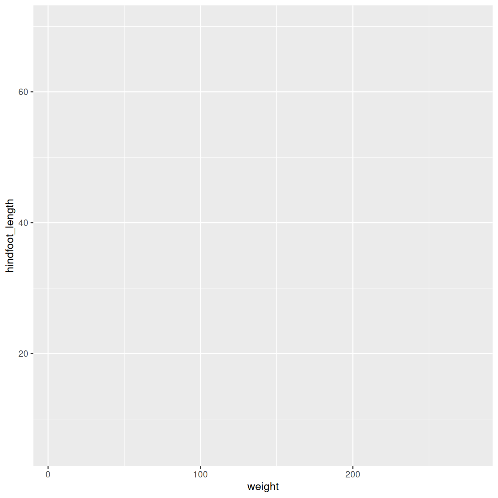
Now we’ve got a plot with x and y axes corresponding to variables
from complete_old. However, we haven’t specified how we
want the data to be displayed. We do this using geom_
functions, which specify the type of geometry we want, such
as points, lines, or bars. We can add a geom_point() layer
to our plot by using the + sign. We indent onto a new line
to make it easier to read, and we have to end the first
line with the + sign.
R
ggplot(data = complete_old, mapping = aes(x = weight, y = hindfoot_length)) +
geom_point()
WARNING
Warning: Removed 3081 rows containing missing values or values outside the scale range
(`geom_point()`).
You may notice a warning that missing values were removed. If a
variable necessary to make the plot is missing from a given row of data
(in this case, hindfoot_length or weight), it
can’t be plotted. ggplot2 just uses a warning message to
let us know that some rows couldn’t be plotted.
Warning messages are one of a few ways R will communicate with you. Warnings can be thought of as a “heads up”. Nothing necessarily went wrong, but the author of that function wanted to draw your attention to something. In the above case, it’s worth knowing that some of the rows of your data were not plotted because they had missing data.
A more serious type of message is an error. Here’s an example:
R
ggplot(data = complete_old, mapping = aes(x = weight, y = hindfoot_length)) +
geom_poit()
ERROR
Error in `geom_poit()`:
! could not find function "geom_poit"As you can see, we only get the error message, with no plot, because
something has actually gone wrong. This particular error message is
fairly common, and it happened because we misspelled point
as poit. Because there is no function named
geom_poit(), R tells us it can’t find a function with that
name.
Changing aesthetics
Building ggplot plots is often an
iterative process, so we’ll continue developing the scatter plot we just
made. You may have noticed that parts of our scatter plot have many
overlapping points, making it difficult to see all the data. We can
adjust the transparency of the points using the alpha
argument, which takes a value between 0 and 1:
R
ggplot(data = complete_old, mapping = aes(x = weight, y = hindfoot_length)) +
geom_point(alpha = 0.2)

We can also change the color of the points:
R
ggplot(data = complete_old, mapping = aes(x = weight, y = hindfoot_length)) +
geom_point(alpha = 0.2, color = "blue")

Two common issues you might run into when working in R are forgetting a closing bracket or a closing quote. Let’s take a look at what each one does.
Try running the following code:
R
ggplot(data = complete_old, mapping = aes(x = weight, y = hindfoot_length)) +
geom_point(color = "blue", alpha = 0.2You will see a + appear in your console. This is R
telling you that it expects more input in order to finish running the
code. It is missing a closing bracket to end the geom_point
function call. You can hit Esc in the console to reset
it.
Something similar will happen if you run the following code:
R
ggplot(data = complete_old, mapping = aes(x = weight, y = hindfoot_length)) +
geom_point(color = "blue, alpha = 0.2)A missing quote at the end of blue means that the rest
of the code is treated as part of the quote, which is a bit easier to
see since RStudio displays character strings in a different color.
You will get a different error message if you run the following code:
R
ggplot(data = complete_old, mapping = aes(x = weight, y = hindfoot_length)) +
geom_point(color = "blue", alpha = 0.2))This time we have an extra closing ), which R doesn’t
know what to do with. It tells you there is an unexpected
), but it doesn’t pinpoint exactly where. With enough time
working in R, you will get better at spotting mismatched brackets.
Adding another variable
Let’s try coloring our points according to the sampling plot type
(plot here refers to the physical area where rodents were sampled and
has nothing to do with making graphs). Since we’re now mapping a
variable (plot_type) to a component of the ggplot2 plot
(color), we need to put the argument inside
aes():
R
ggplot(data = complete_old, mapping = aes(x = weight, y = hindfoot_length, color = plot_type)) +
geom_point(alpha = 0.2)

Challenge 1: Modifying plots
- Try modifying the plot so that the
shapeof the point varies bysex. You will set theshapethe same way you set thecolor.
Do you think this is a good way to represent sex with
these data?
R
ggplot(data = complete_old,
mapping = aes(x = weight, y = hindfoot_length, shape = sex)) +
geom_point(alpha = 0.2)
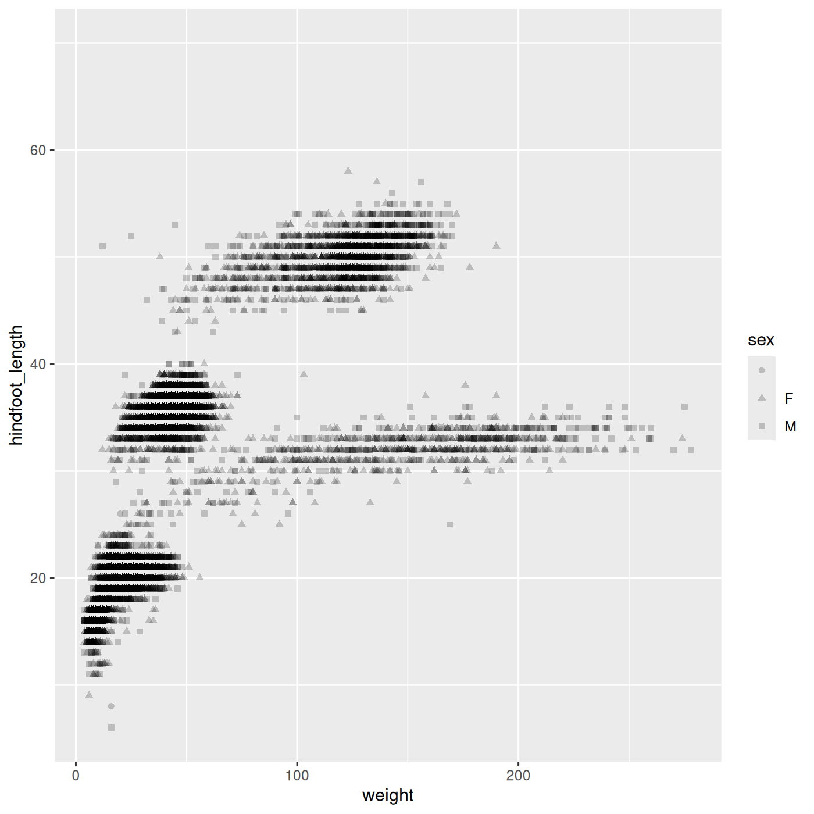
Challenge 1: Modifying plots (continued)
- Now try changing the plot so that the
colorof the points vary byyear. Do you notice a difference in the color scale compared to changing color by plot type? Why do you think this happened?
R
ggplot(data = complete_old,
mapping = aes(x = weight, y = hindfoot_length, color = year)) +
geom_point(alpha = 0.2)

- For Part 2, the color scale is different compared to using
color = plot_typebecauseplot_typeandyearare different variable types.plot_typeis a categorical variable, soggplot2defaults to use a discrete color scale, whereasyearis a numeric variable, soggplot2uses a continuous color scale.
Changing scales
The default discrete color scale isn’t always ideal: it isn’t
friendly to viewers with colorblindness and it doesn’t translate well to
grayscale. However, ggplot2 comes with
quite a few other color scales, including the fantastic
viridis scales, which are designed to be colorblind and
grayscale friendly. We can change scales by adding scale_
functions to our plots:
R
ggplot(data = complete_old, mapping = aes(x = weight, y = hindfoot_length, color = plot_type)) +
geom_point(alpha = 0.2) +
scale_color_viridis_d()

Scales don’t just apply to colors- any plot component that you put
inside aes() can be modified with scale_
functions. Just as we modified the scale used to map
plot_type to color, we can modify the way that
weight is mapped to the x axis by using the
scale_x_log10() function:
R
ggplot(data = complete_old, mapping = aes(x = weight, y = hindfoot_length, color = plot_type)) +
geom_point(alpha = 0.2) +
scale_x_log10()
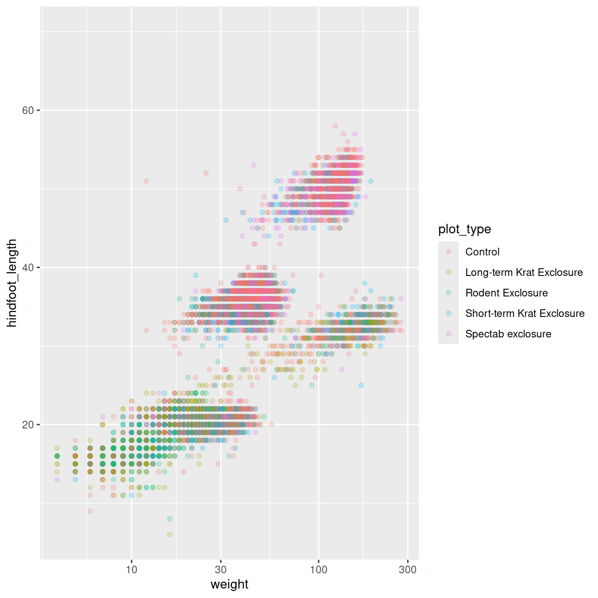
One nice thing about ggplot and the
tidyverse in general is that groups of functions that do
similar things are given similar names. Any function that modifies a
ggplot scale starts with scale_, making it
easier to search for the right function.
Barchart
Let’s try making a different type of plot altogether. We’ll start off
with our same basic building blocks using ggplot() and
aes().
R
ggplot(data = complete_old, mapping = aes(x = plot_type, y = hindfoot_length))

This time, let’s try making a bar chart, which are common in ecology.
We will have plot_type on the x axis and
hindfoot_length on the y axis. We can do this by adding
geom_bar() to our ggplot():
R
ggplot(data = complete_old, mapping = aes(x = plot_type, y = hindfoot_length)) +
geom_bar(stat = "summary", fun = "mean")
WARNING
Warning: Removed 2733 rows containing non-finite outside the scale range
(`stat_summary()`).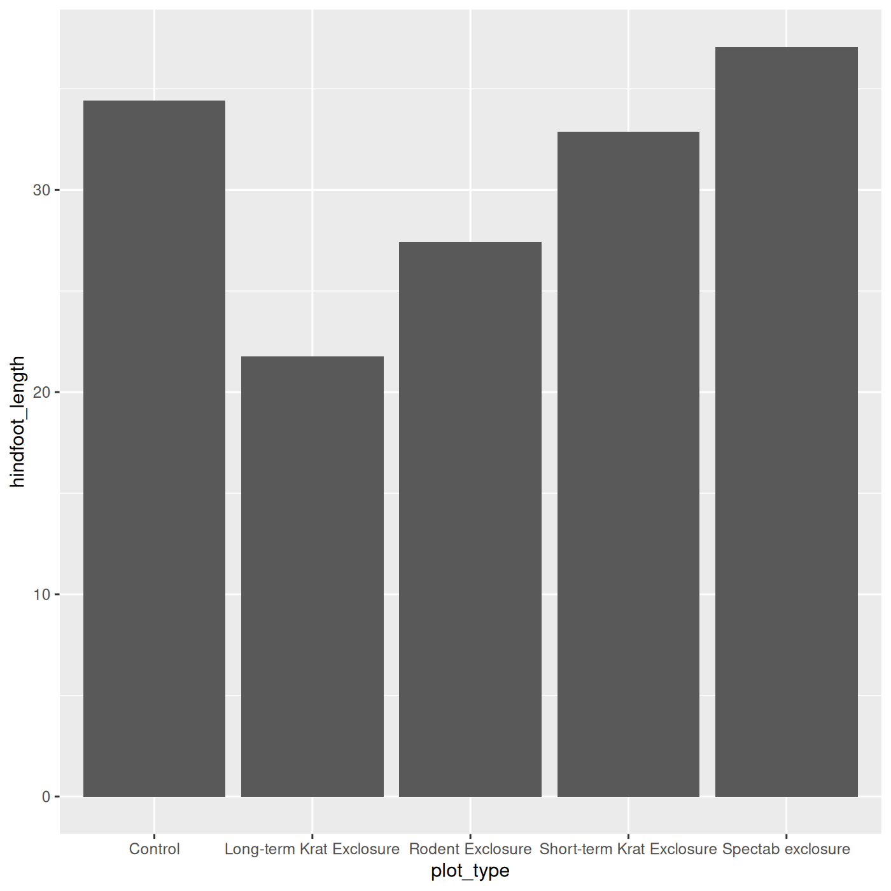
Just as we colored the points before, we can color our bar chart by
plot_type as well:
R
ggplot(data = complete_old, mapping = aes(x = plot_type, y = hindfoot_length, color = plot_type)) +
geom_bar(stat = "summary", fun = "mean")
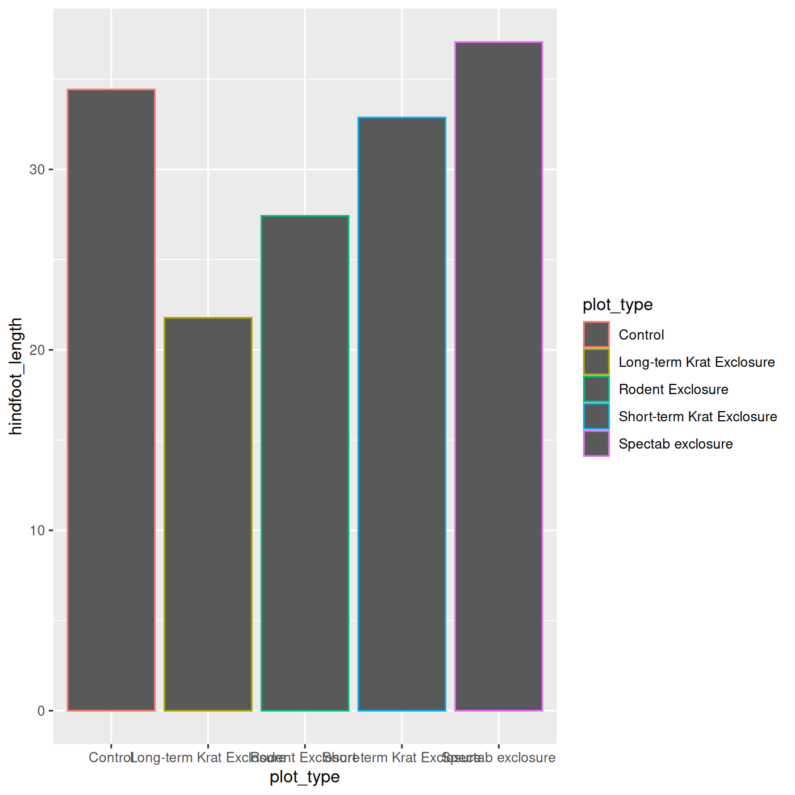
It looks like color has only affected the outlines of
the bars, not the rectangular portions. This is because the
color only impacts 1-dimensional parts of a
ggplot: points and lines. To change the color of
2-dimensional parts of a plot, we use fill:
R
ggplot(data = complete_old, mapping = aes(x = plot_type, y = hindfoot_length, fill = plot_type)) +
geom_bar(stat = "summary", fun = "mean")
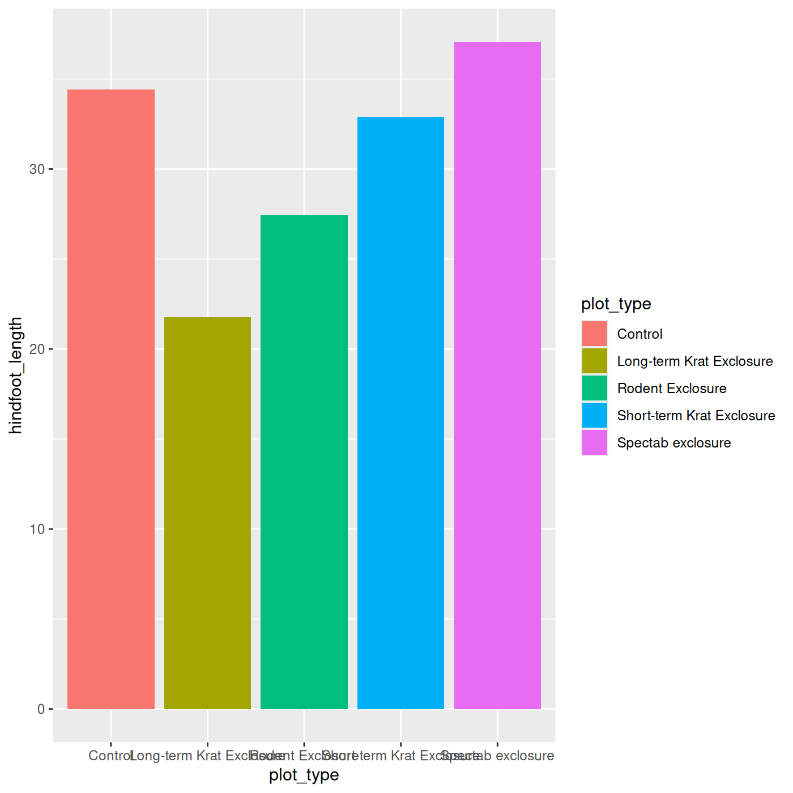
One thing you may notice is that the axis labels are overlapping each
other, depending on how wide your plot viewer is. One way to help make
them more legible is to wrap the text. We can do that
by modifying the labels for the x axis
scale.
We use the scale_x_discrete() function because we have a
discrete axis, and we modify the labels argument. The
function label_wrap_gen() will wrap the text of the labels
to make them more legible.
R
ggplot(data = complete_old, mapping = aes(x = plot_type, y = hindfoot_length, fill = plot_type)) +
geom_bar(stat = "summary", fun = "mean") +
scale_x_discrete(labels = label_wrap_gen(width = 10))
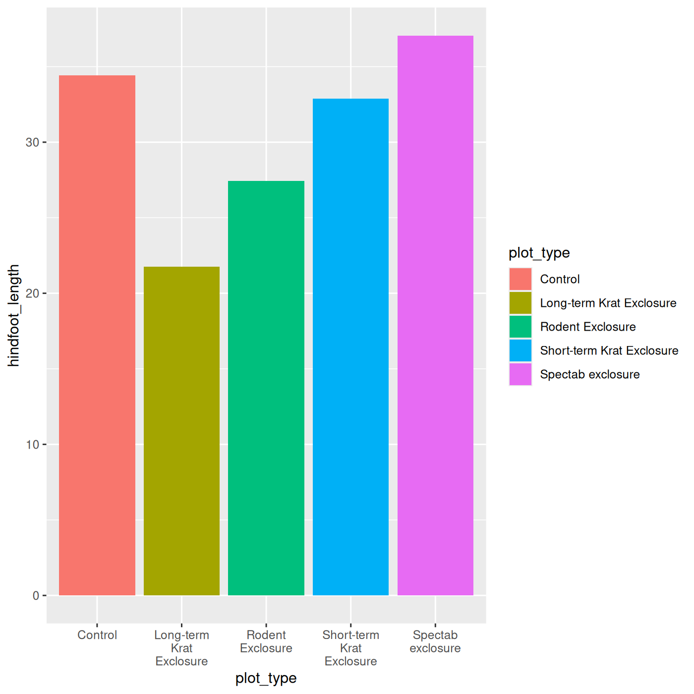
Adding geoms
One of the most powerful aspects of
ggplot is the way we can add components to
a plot in successive layers. While bar charts can be very useful for
summarizing data, it is often helpful to show the raw data as well. With
ggplot, we can easily add another
geom_ to our plot to show the raw data.
Let’s add geom_point() to visualize the raw data. We
will modify the alpha argument to help with
overplotting.
R
ggplot(data = complete_old, mapping = aes(x = plot_type, y = hindfoot_length)) +
geom_bar(stat = "summary", fun = "mean") +
geom_point(alpha = 0.2)
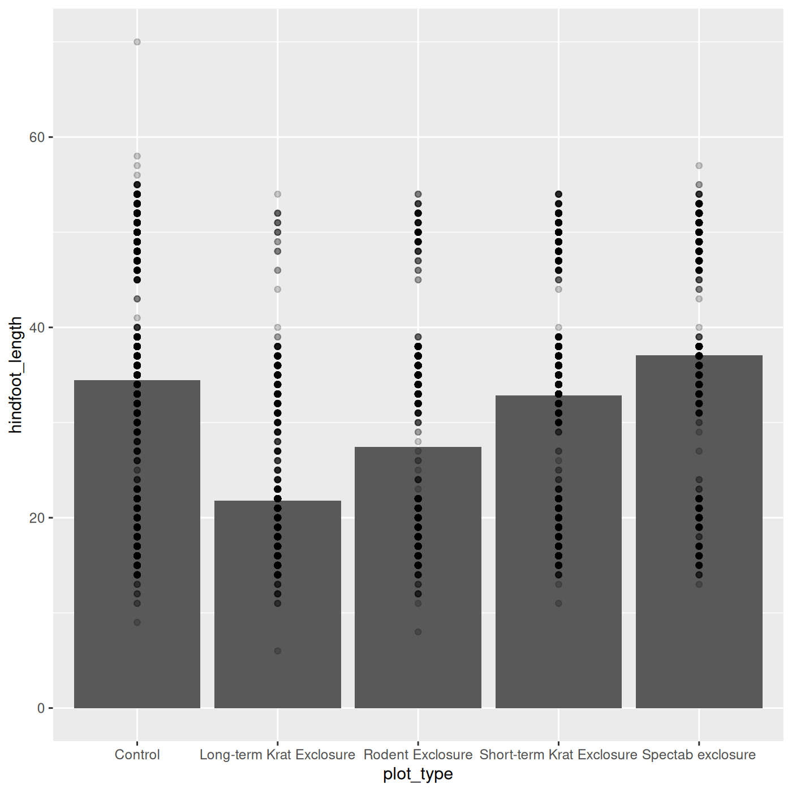
Uh oh… all our points for a given x axis category fall
exactly on a line, which isn’t very useful. We can shift to using
geom_jitter(), which will add points with a bit of random
noise added to the positions to prevent this from happening.
R
ggplot(data = complete_old, mapping = aes(x = plot_type, y = hindfoot_length)) +
geom_bar(stat = "summary", fun = "mean") +
geom_jitter(alpha = 0.2)
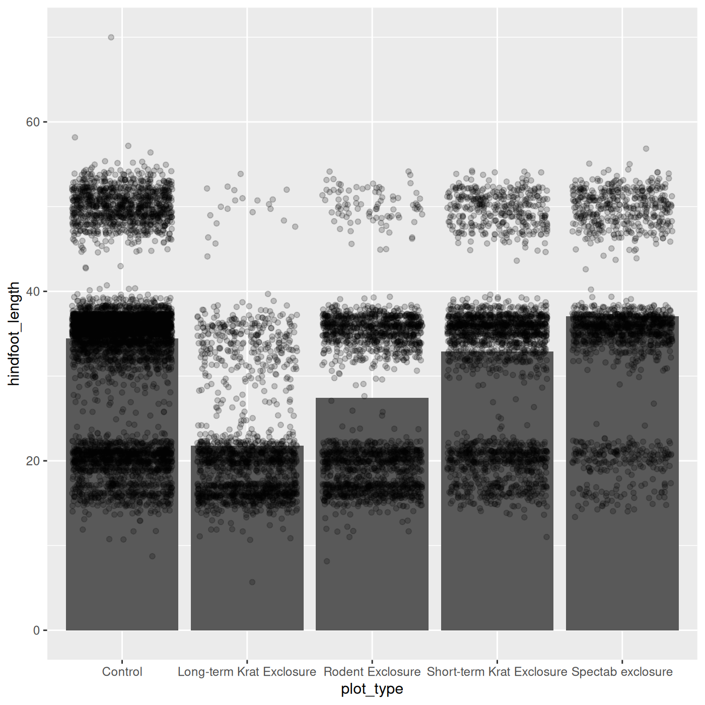
Just as before, we can map plot_type to
color by putting it inside aes().
R
ggplot(data = complete_old, mapping = aes(x = plot_type, y = hindfoot_length, fill = plot_type)) +
geom_bar(stat = "summary", fun = "mean") +
geom_jitter(alpha = 0.2)
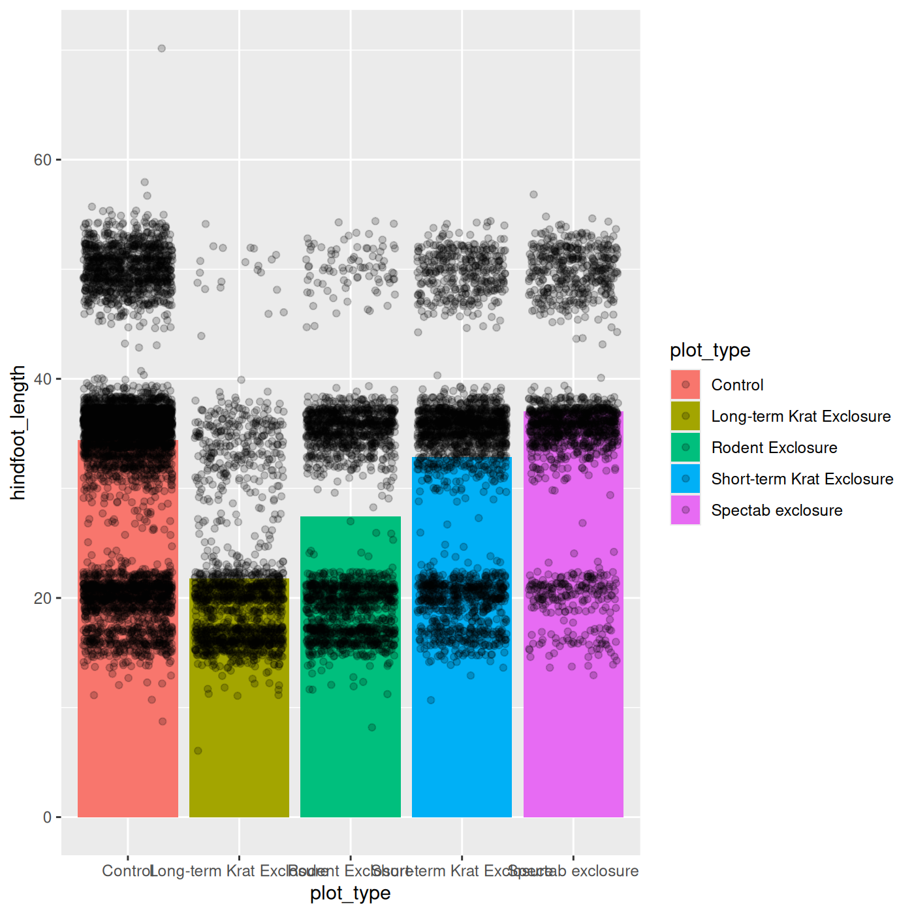
Notice that both the color of the points and the color of the bar
plot lines changed. Any time we specify an aes() mapping
inside our initial ggplot() function, that mapping will
apply to all our geoms.
If we want to limit the mapping to a single geom, we can
put the mapping into the specific geom_ function, like
this:
R
ggplot(data = complete_old, mapping = aes(x = plot_type, y = hindfoot_length)) +
geom_bar(stat = "summary", fun = "mean") +
geom_jitter(mapping = aes(color = plot_type), alpha = 0.2)
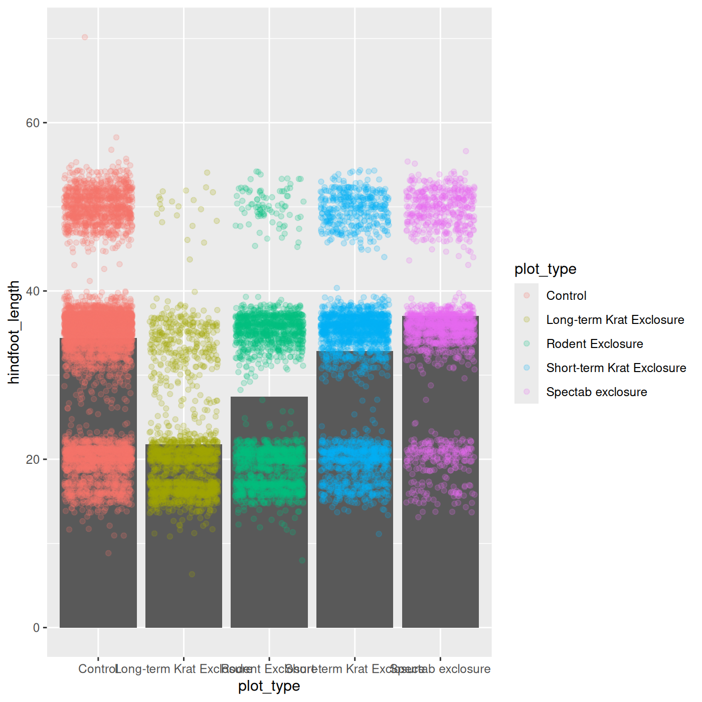
Now our points are colored according to plot_type, but
the bars are all the same color. One thing you might notice is that even
with alpha = 0.2, the points obscure parts of the bars This
is because the geom_point() layer comes after the
geom_bar() layer, which means the points are plotted on top
of the bars To put the bar plot on top, we switch the order of the
layers:
R
ggplot(data = complete_old, mapping = aes(x = plot_type, y = hindfoot_length)) +
geom_jitter(aes(color = plot_type), alpha = 0.2) +
geom_bar(stat = "summary", fun = "mean")
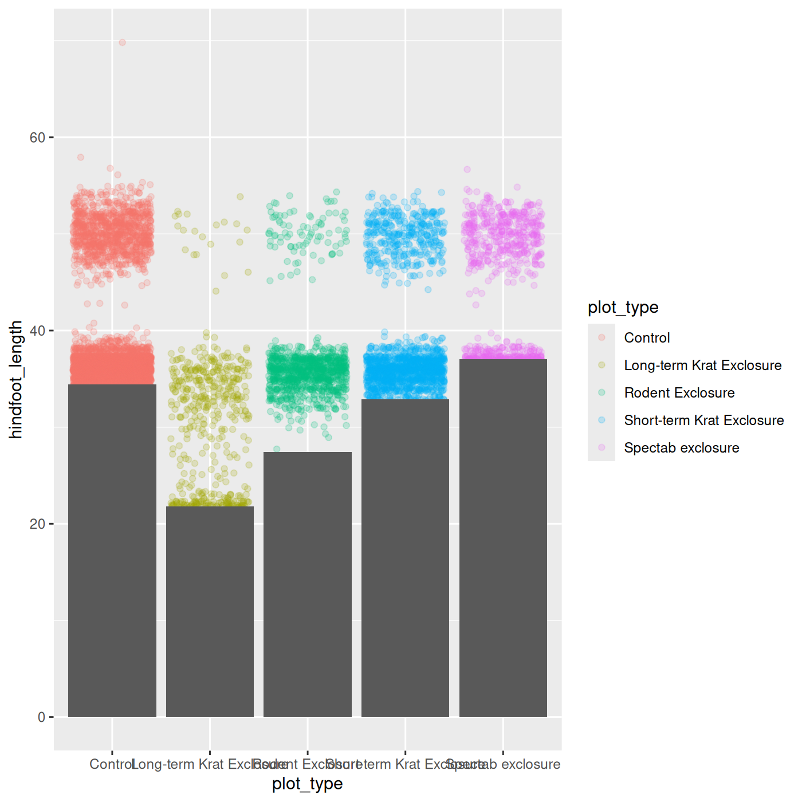
Now we have the opposite problem! The white fill of the
bar plot completely obscures some of the points. To address this
problem, we can remove the fill from the bar plot
altogether, leaving only the black lines. To do this, we set
fill to NA:
R
ggplot(data = complete_old, mapping = aes(x = plot_type, y = hindfoot_length)) +
geom_jitter(aes(color = plot_type), alpha = 0.2) +
geom_bar(stat = "summary", fun = "mean", color = "black", fill = NA)
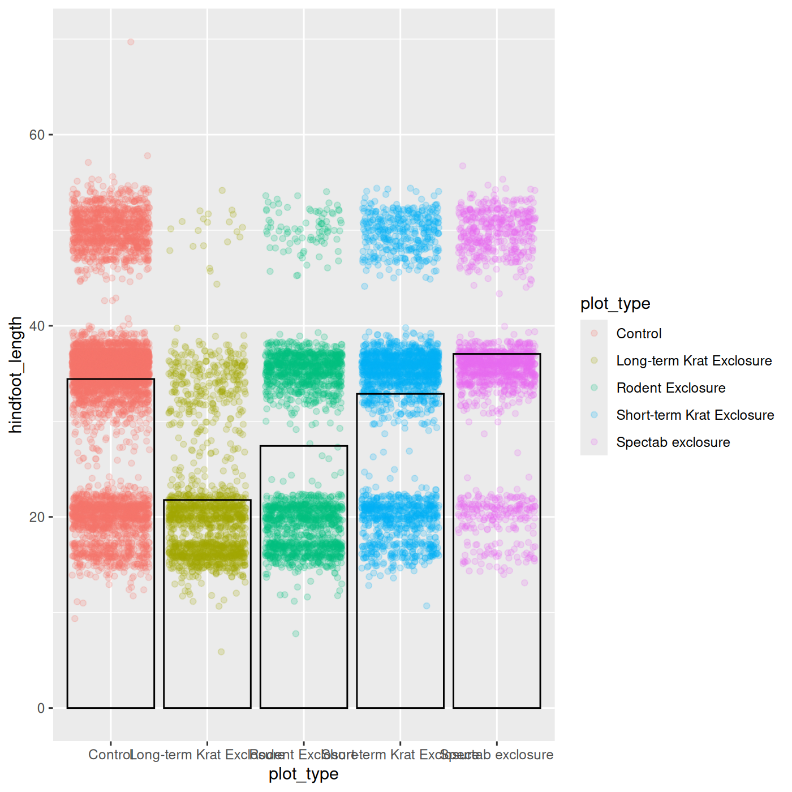
Now we can see all the raw data and our bar charts on top.
Error Bars
Bar charts do not show the spread of data as well as box plots or violin plots. We can illustrate our spread of data by including error bars, which can be calculated using different statistical analyses. Here, we will illustrate error bars using a mean standard error, which shows precision of the mean estimate. You can also calculate error bars using the standard deviation.
R
ggplot(data = complete_old, mapping = aes(x = plot_type, y = hindfoot_length, fill = plot_type)) +
geom_bar(stat = "summary", fun = "mean") +
stat_summary(fun.data = "mean_sdl", geom = "errorbar", width = 0.2, color = "blue") +
stat_summary(fun.data = "mean_se", geom = "errorbar", width = 0.2)
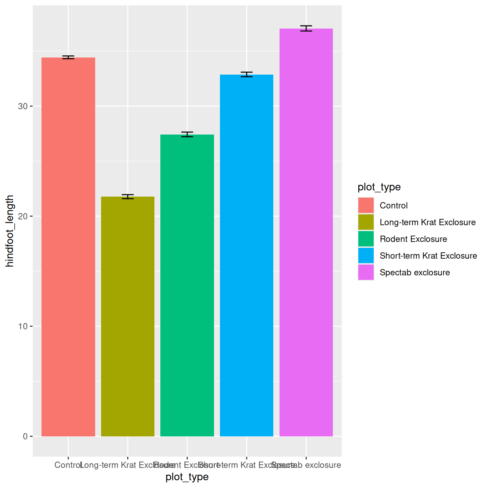
Challenge 2: Change geoms
Violin plots show the distribution shape of your data- try making one
using plot_type and hindfoot_length as the x
and y variables. Remember that all geom functions start with
geom_, followed by the type of geom.
This might also be a place to test your search engine skills. It is
often useful to search for
R package_name stuff you want to search. So for this
example we might search for R ggplot2 violin plot.
R
ggplot(data = complete_old,
mapping = aes(x = plot_type,
y = hindfoot_length)) +
geom_jitter(alpha = 0.2) +
geom_violin()
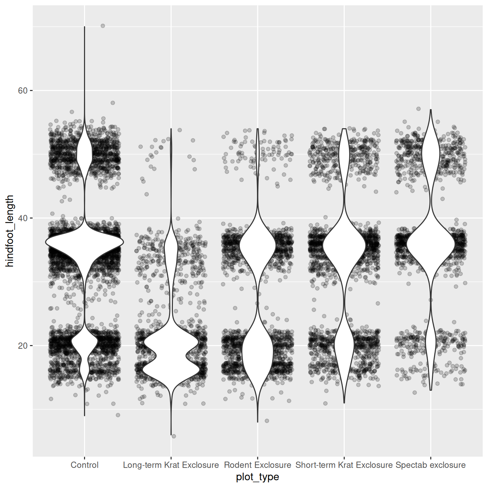
Challenge 2: Change geoms
(continued)
For an extra challenge, , make the color of the points and
outlines of the violins vary by plot_type, and set the fill
of the violins to white. Try playing with the order of the layers to see
what looks best.
R
ggplot(data = complete_old,
mapping = aes(x = plot_type,
y = hindfoot_length,
color = plot_type)) +
geom_jitter(alpha = 0.2, mapping = aes(fill = plot_type)) +
geom_violin( fill = "white", mapping = aes(color = plot_type))
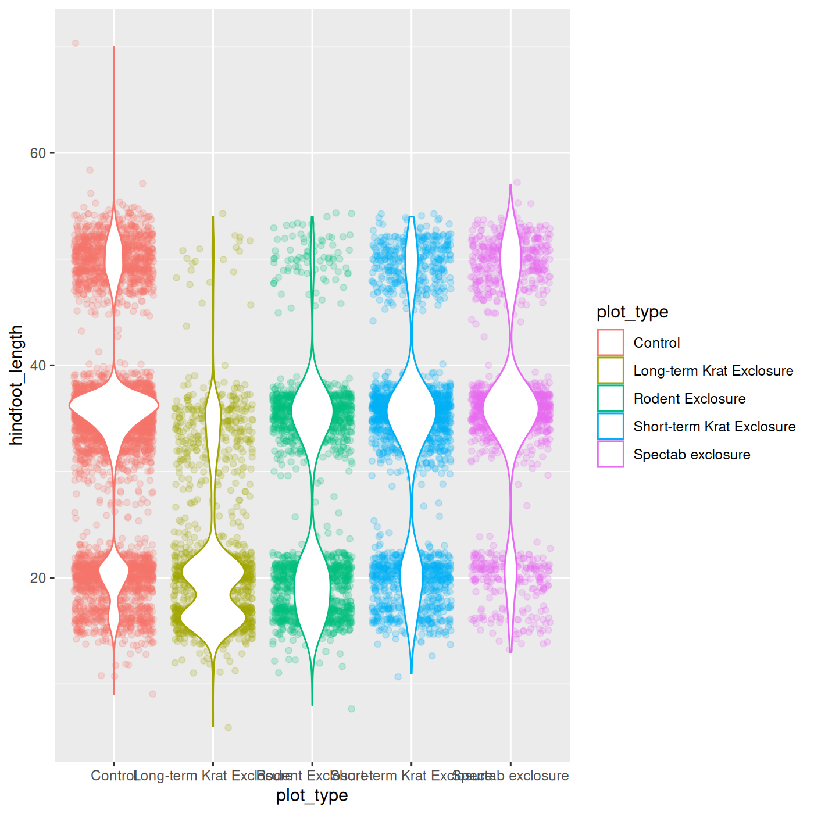
Changing themes
So far we’ve been changing the appearance of parts of our plot
related to our data and the geom_ functions, but we can
also change many of the non-data components of our plot.
At this point, we are pretty happy with the basic layout of our plot,
so we can assign it to a plot to a named
object. We do this using the assignment
arrow <-. What we are doing here is taking the
result of the code on the right side of the arrow, and assigning it to
an object whose name is on the left side of the arrow.
We will create an object called myplot. If you run the
name of the ggplot2 object, it will show the plot, just
like if you ran the code itself.
R
myplot <- ggplot(data = complete_old, mapping = aes(x = plot_type, y = hindfoot_length)) +
geom_jitter(aes(color = plot_type), alpha = 0.2) +
geom_bar(stat = "summary", fun = "mean", color = "black", fill = NA)
myplot
This process of assigning something to an object is
not specific to ggplot2, but rather a general feature of R.
We will be using it a lot in the rest of this lesson. We can now work
with the myplot object as if it was a block of
ggplot2 code, which means we can use + to add
new components to it.
We can change the overall appearance using theme_
functions. Let’s try a black-and-white theme by adding
theme_bw() to our plot:
R
myplot + theme_bw()
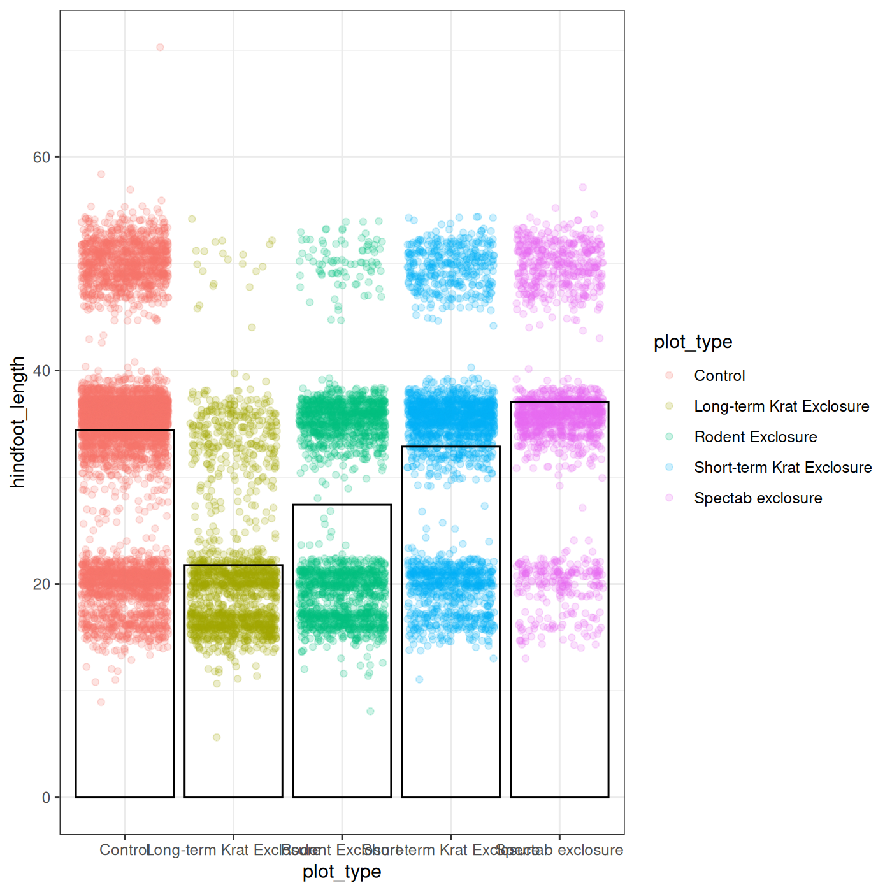
As you can see, a number of parts of the plot have changed.
theme_ functions usually control many aspects of a plot’s
appearance all at once, for the sake of convenience. To individually
change parts of a plot, we can use the theme() function,
which can take many different arguments to change things about the text,
grid lines, background color, and more. Let’s try changing the size of
the text on our axis titles. We can do this by specifying that the
axis.title should be an element_text() with
size set to 14.
R
myplot +
theme_bw() +
theme(axis.title = element_text(size = 14))
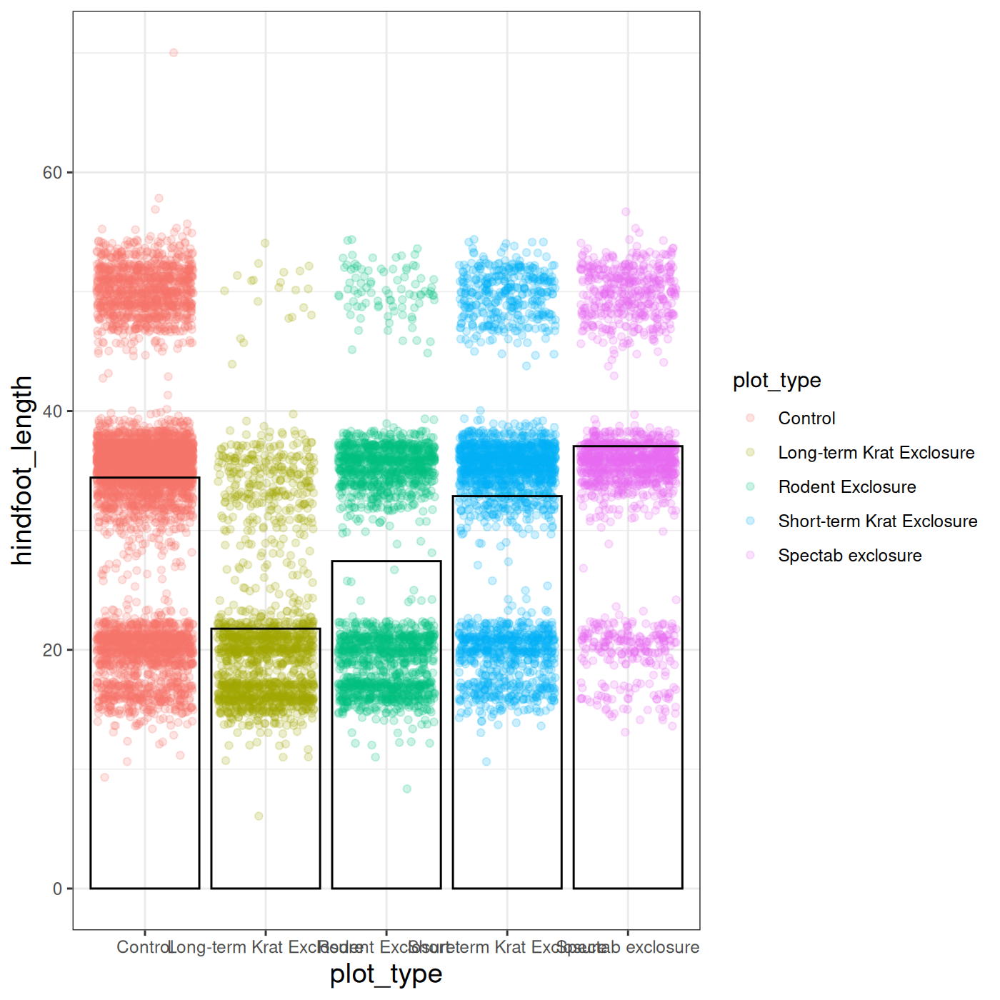
Another change we might want to make is to remove the vertical grid
lines. Since our x axis is categorical, those grid lines aren’t useful.
To do this, inside theme(), we will change the
panel.grid.major.x to an element_blank().
R
myplot +
theme_bw() +
theme(axis.title = element_text(size = 14),
panel.grid.major.x = element_blank())
Another useful change might be to remove the color legend, since that
information is already on our x axis. For this one, we will set
legend.position to “none”.
R
myplot +
theme_bw() +
theme(axis.title = element_text(size = 14),
panel.grid.major.x = element_blank(),
legend.position = "none")
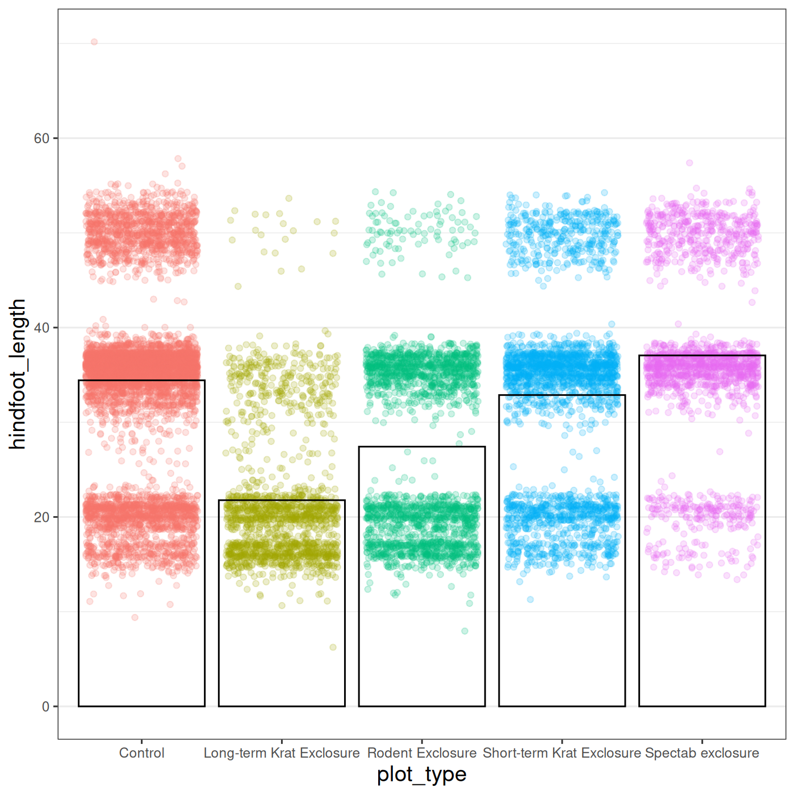
Because there are so many possible arguments to the
theme() function, it can sometimes be hard to find the
right one. Here are some tips for figuring out how to modify a plot
element:
- type out
theme(), put your cursor between the parentheses, and hit Tab to bring up a list of arguments- you can scroll through the arguments, or start typing, which will shorten the list of potential matches
- like many things in the
tidyverse, similar argument start with similar names- there are
axis,legend,panel,plot, andstriparguments
- there are
- arguments have hierarchy
-
textcontrols all text in the whole plot -
axis.titlecontrols the text for the axis titles -
axis.title.xcontrols the text for the x axis title
-
You may have noticed that we have used 2 different approaches to
getting rid of something in ggplot:
-
panel.grid.major.x = element_blank()to remove the x grid lines -
legend.position = "none"to remove our legend
Why are there so many ways to do what seems like the same thing?? This is a common frustration when working with R, or with any programming language. There are a couple reasons for it:
- Different people contribute to different packages and functions, and they may choose to do things differently.
- Code may appear to be doing the same thing, when the
details are actually quite different. The inner workings of
ggplot2are actually quite complex, since it turns out making plots is a very complicated process! Because of this, things that seem the same (removing parts of a plot), may actually be operating on very different components or stages of the final plot. - Developing packages is a highly iterative process, and sometimes
things change. However, changing too much stuff can make old code break.
Let’s say removing the legend was introduced as a feature of
ggplot2, and then a lot of time passed before someone added the feature letting you remove outliers fromgeom_boxplot(). Changing the way you remove the legend, so that it’s the same as the boxplot approach, could break all of the code written in the meantime, so developers may opt to keep the old approach in place.
Changing labels
Our plot is really shaping up now. However, we probably want to make
our axis titles nicer, and perhaps add a main title to the plot. We can
do this using the labs() function:
R
myplot +
theme_bw() +
theme(axis.title = element_text(size = 14),
legend.position = "none") +
labs(title = "Rodent size by plot type",
x = "Plot type",
y = "Hindfoot length (mm)")
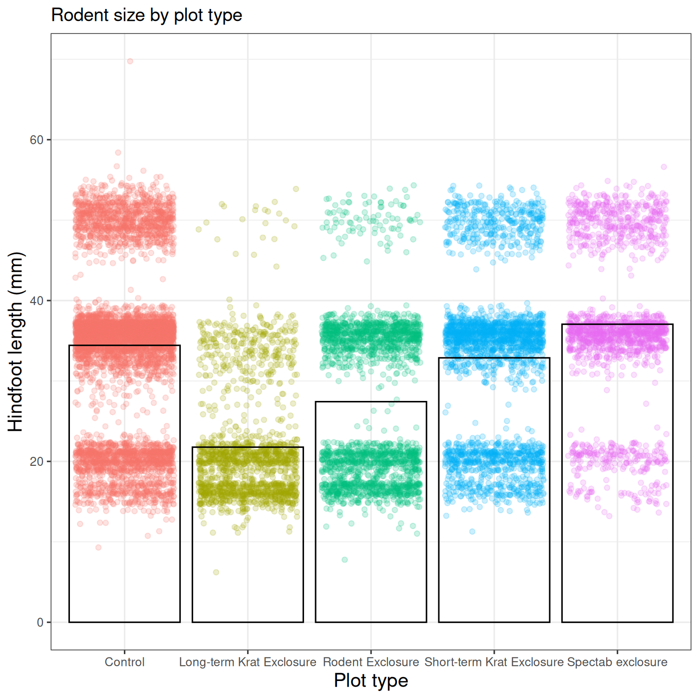
We removed our legend from this plot, but you can also change the
titles of various legends using labs(). For example,
labs(color = "Plot type") would change the title of a color
scale legend to “Plot type”.
Challenge 3: Customizing a plot
Modify the previous plot by adding a descriptive subtitle. Increase the font size of the plot title and make it bold.
Hint: “bold” is referred to as a font “face”
R
myplot +
theme_bw() +
theme(axis.title = element_text(size = 14), legend.position = "none",
plot.title = element_text(face = "bold", size = 20)) +
labs(title = "Rodent size by plot type",
subtitle = "Long-term dataset from Portal, AZ",
x = "Plot type",
y = "Hindfoot length (mm)")
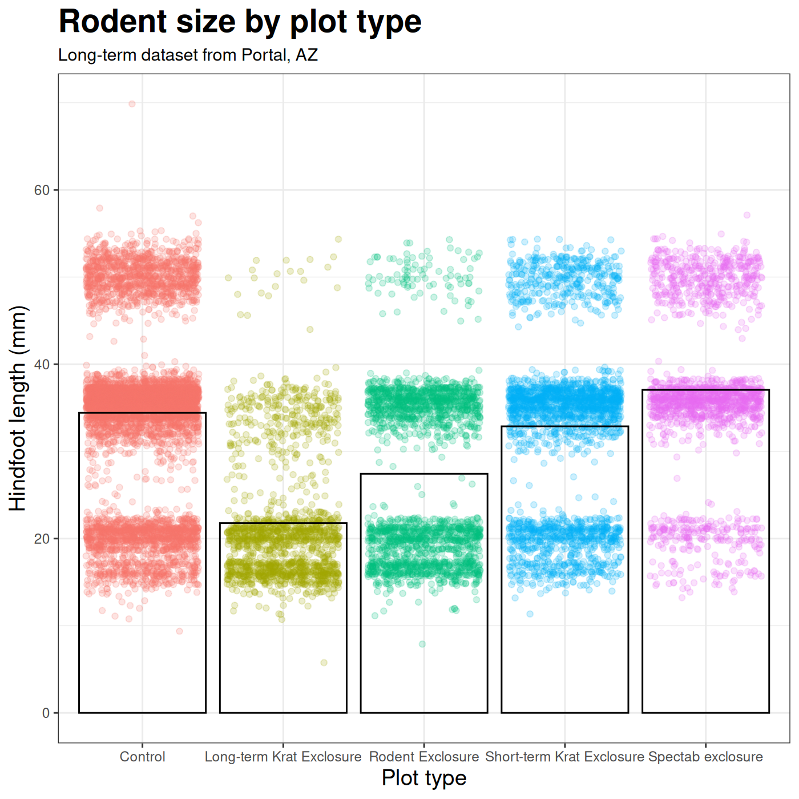
Faceting
One of the most powerful features of
ggplot is the ability to quickly split a
plot into multiple smaller plots based on a categorical variable, which
is called faceting.
So far we’ve mapped variables to the x axis, the y axis, and color, but trying to add a 4th variable becomes difficult. Changing the shape of a point might work, but only for very few categories, and even then, it can be hard to tell the differences between the shapes of small points.
Instead of cramming one more variable into a single plot, we will use
the facet_wrap() function to generate a series of smaller
plots, split out by sex. We also use ncol to
specify that we want them arranged in a single column:
R
myplot +
theme_bw() +
theme(axis.title = element_text(size = 14),
legend.position = "none",
panel.grid.major.x = element_blank()) +
labs(title = "Rodent size by plot type",
x = "Plot type",
y = "Hindfoot length (mm)",
color = "Plot type") +
facet_wrap(vars(sex), ncol = 1)
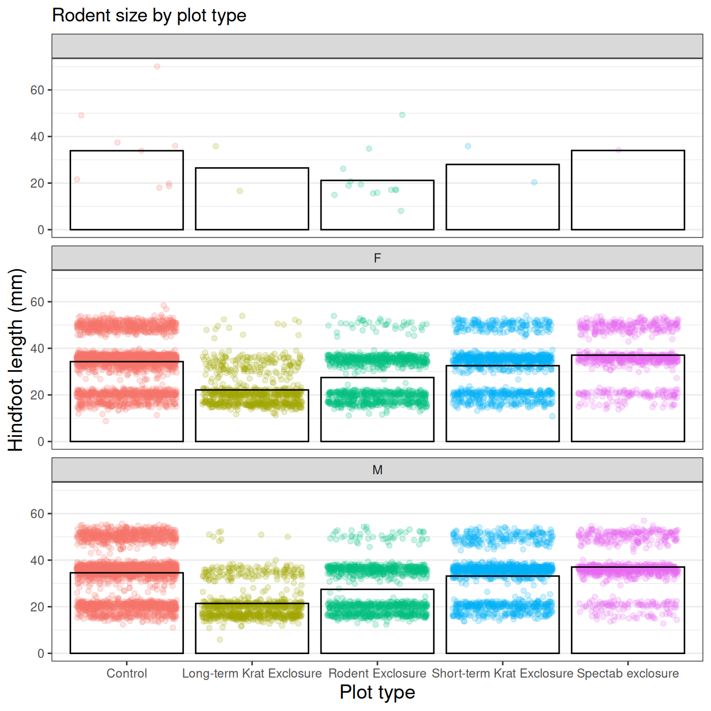
Faceting comes in handy in many scenarios. It can be useful when:
- a categorical variable has too many levels to differentiate by color (such as a dataset with 20 countries)
- your data overlap heavily, obscuring categories
- you want to show more than 3 variables at once
- you want to see each category in isolation while allowing for general comparisons between categories
Exporting plots
Once we are happy with our final plot, we can assign the whole thing
to a new object, which we can call finalplot.
R
finalplot <- myplot +
theme_bw() +
theme(axis.title = element_text(size = 14),
legend.position = "none",
panel.grid.major.x = element_blank()) +
labs(title = "Rodent size by plot type",
x = "Plot type",
y = "Hindfoot length (mm)",
color = "Plot type") +
facet_wrap(vars(sex), ncol = 1)
After this, we can run ggsave() to save our plot. The
first argument we give is the path to the file we want to save,
including the correct file extension. This code will make an image
called rodent_size_plots.jpg in the images/
folder of our current project. We are making a .jpg, but
you can save .pdf, .tiff, and other file
formats. Next, we tell it the name of the plot object we want to save.
We can also specify things like the width and height of the plot in
inches.
R
ggsave(filename = "images/rodent_size_plots.jpg", plot = finalplot,
height = 6, width = 8)
Challenge 4: Make your own plot
Try making your own plot! You can run str(complete_old)
or ?complete_old to explore variables you might use in your
new plot. Feel free to use variables we have already seen, or some we
haven’t explored yet.
Here are a couple ideas to get you started:
- make a histogram of one of the numeric variables
- try using a different color
scale_ - try changing the size of points or thickness of lines in a
geom
- the
ggplot()function initiates a plot, andgeom_functions add representations of your data - use
aes()when mapping a variable from the data to a part of the plot - use
scale_functions to modify the scales used to represent variables - use premade
theme_functions to broadly change appearance, and thetheme()function to fine-tune - start simple and build your plots iteratively
Content from Exploring and understanding data
Last updated on 2026-11-05 | Edit this page
Overview
Questions
- How does R store and represent data?
Objectives
- Explore the structure and content of data.frames
- Understand vector types and missing data
- Create and convert factors
- Understand how R assigns values to objects
- Use the RStudio help interface to get help with R functions
- Be able to format questions to get help in the broader R community
Setup
R
library(tidyverse)
library(ratdat)
The data.frame
We just spent quite a bit of time learning how to create
visualizations from the complete_old data, but we did not
talk much about what this complete_old
thing is. It’s important to understand how R thinks about, represents,
and stores data in order for us to have a productive working
relationship with R.
The complete_old data is stored in R as a
data.frame, which is the most common way that R
represents tabular data (data that can be stored in a table format, like
a spreadsheet). We can check what complete_old is by using
the class() function:
R
class(complete_old)
OUTPUT
[1] "tbl_df" "tbl" "data.frame"We can view the first few rows with the head() function,
and the last few rows with the tail() function:
R
head(complete_old)
OUTPUT
# A tibble: 6 × 13
record_id month day year plot_id species_id sex hindfoot_length weight
<int> <int> <int> <int> <int> <chr> <chr> <int> <int>
1 1 7 16 1977 2 NL M 32 NA
2 2 7 16 1977 3 NL M 33 NA
3 3 7 16 1977 2 DM F 37 NA
4 4 7 16 1977 7 DM M 36 NA
5 5 7 16 1977 3 DM M 35 NA
6 6 7 16 1977 1 PF M 14 NA
# ℹ 4 more variables: genus <chr>, species <chr>, taxa <chr>, plot_type <chr>R
tail(complete_old)
OUTPUT
# A tibble: 6 × 13
record_id month day year plot_id species_id sex hindfoot_length weight
<int> <int> <int> <int> <int> <chr> <chr> <int> <int>
1 16873 12 5 1989 8 DO M 37 51
2 16874 12 5 1989 16 RM F 18 15
3 16875 12 5 1989 5 RM M 17 9
4 16876 12 5 1989 4 DM M 37 31
5 16877 12 5 1989 11 DM M 37 50
6 16878 12 5 1989 8 DM F 37 42
# ℹ 4 more variables: genus <chr>, species <chr>, taxa <chr>, plot_type <chr>We used these functions with just one argument, the object
complete_old, and we didn’t give the argument a name, like
we often did with ggplot2. In R, a function’s arguments
come in a particular order, and if you put them in the correct order,
you don’t need to name them. In this case, the name of the argument is
x, so we can name it if we want, but since we know it’s the
first argument, we don’t need to.
Some arguments are optional. For example, the n argument
in head() specifies the number of rows to print. It
defaults to 6, but we can override that by specifying a different
number:
R
head(complete_old, n = 10)
OUTPUT
# A tibble: 10 × 13
record_id month day year plot_id species_id sex hindfoot_length weight
<int> <int> <int> <int> <int> <chr> <chr> <int> <int>
1 1 7 16 1977 2 NL M 32 NA
2 2 7 16 1977 3 NL M 33 NA
3 3 7 16 1977 2 DM F 37 NA
4 4 7 16 1977 7 DM M 36 NA
5 5 7 16 1977 3 DM M 35 NA
6 6 7 16 1977 1 PF M 14 NA
7 7 7 16 1977 2 PE F NA NA
8 8 7 16 1977 1 DM M 37 NA
9 9 7 16 1977 1 DM F 34 NA
10 10 7 16 1977 6 PF F 20 NA
# ℹ 4 more variables: genus <chr>, species <chr>, taxa <chr>, plot_type <chr>If we order them correctly, we don’t have to name either:
R
head(complete_old, 10)
OUTPUT
# A tibble: 10 × 13
record_id month day year plot_id species_id sex hindfoot_length weight
<int> <int> <int> <int> <int> <chr> <chr> <int> <int>
1 1 7 16 1977 2 NL M 32 NA
2 2 7 16 1977 3 NL M 33 NA
3 3 7 16 1977 2 DM F 37 NA
4 4 7 16 1977 7 DM M 36 NA
5 5 7 16 1977 3 DM M 35 NA
6 6 7 16 1977 1 PF M 14 NA
7 7 7 16 1977 2 PE F NA NA
8 8 7 16 1977 1 DM M 37 NA
9 9 7 16 1977 1 DM F 34 NA
10 10 7 16 1977 6 PF F 20 NA
# ℹ 4 more variables: genus <chr>, species <chr>, taxa <chr>, plot_type <chr>Additionally, if we name them, we can put them in any order we want:
R
head(n = 10, x = complete_old)
OUTPUT
# A tibble: 10 × 13
record_id month day year plot_id species_id sex hindfoot_length weight
<int> <int> <int> <int> <int> <chr> <chr> <int> <int>
1 1 7 16 1977 2 NL M 32 NA
2 2 7 16 1977 3 NL M 33 NA
3 3 7 16 1977 2 DM F 37 NA
4 4 7 16 1977 7 DM M 36 NA
5 5 7 16 1977 3 DM M 35 NA
6 6 7 16 1977 1 PF M 14 NA
7 7 7 16 1977 2 PE F NA NA
8 8 7 16 1977 1 DM M 37 NA
9 9 7 16 1977 1 DM F 34 NA
10 10 7 16 1977 6 PF F 20 NA
# ℹ 4 more variables: genus <chr>, species <chr>, taxa <chr>, plot_type <chr>Generally, it’s good practice to start with the required arguments, like the data.frame whose rows you want to see, and then to name the optional arguments. If you are ever unsure, it never hurts to explicitly name an argument.
Aside: Getting Help
To learn more about a function, you can type a ? in
front of the name of the function, which will bring up the official
documentation for that function:
R
?head
Function documentation is written by the authors of the functions, so they can vary pretty widely in their style and readability. The first section, Description, gives you a concise description of what the function does, but it may not always be enough. The Arguments section defines all the arguments for the function and is usually worth reading thoroughly. Finally, the Examples section at the end will often have some helpful examples that you can run to get a sense of what the function is doing.
Another great source of information is package
vignettes. Many packages have vignettes, which are like
tutorials that introduce the package, specific functions, or general
methods. You can run vignette(package = "package_name") to
see a list of vignettes in that package. Once you have a name, you can
run vignette("vignette_name", "package_name") to view that
vignette. You can also use a web browser to go to
https://cran.r-project.org/web/packages/package_name/vignettes/
where you will find a list of links to each vignette. Some packages will
have their own websites, which often have nicely formatted vignettes and
tutorials.
Finally, learning to search for help is probably the most useful
skill for any R user. The key skill is figuring out what you should
actually search for. It’s often a good idea to start your search with
R or R programming. If you have the name of a
package you want to use, start with R package_name.
Many of the answers you find will be from a website called Stack
Overflow, where people ask programming questions and others provide
answers. It is generally poor form to ask duplicate questions, so before
you decide to post your own, do some thorough searching to see if it has
been answered before (it likely has). If you do decide to post a
question on Stack Overflow, or any other help forum, you will want to
create a reproducible example or
reprex. If you are asking a complicated question
requiring your own data and a whole bunch of code, people probably won’t
be able or willing to help you. However, if you can hone in on the
specific thing you want help with, and create a minimal example using
smaller, fake data, it will be much easier for others to help you. If
you search how to make a reproducible example in R, you
will find some great resources to help you out.
Generative AI Help
In addition to the resources we’ve already mentioned for getting help with R, it’s becoming increasingly common to turn to generative AI chatbots such as ChatGPT to get help while coding. You will probably receive some useful guidance by presenting your error message to the chatbot and asking it what went wrong.
However, the way this help is provided by the chatbot is different. Answers on Stack Overflow have (probably) been given by a human as a direct response to the question asked. But generative AI chatbots, which are based on an advanced statistical model, respond by generating the most likely sequence of text that would follow the prompt they are given.
While responses from generative AI tools can often be helpful, they are not always reliable. These tools sometimes generate plausible but incorrect or misleading information, so (just as with an answer found on the internet) it is essential to verify their accuracy. You need the knowledge and skills to be able to understand these responses, to judge whether or not they are accurate, and to fix any errors in the code it offers you.
In addition to asking for help, programmers can use generative AI tools to generate code from scratch; extend, improve and reorganise existing code; translate code between programming languages; figure out what terms to use in a search of the internet; and more. However, there are drawbacks that you should be aware of.
The models used by these tools have been “trained” on very large volumes of data, much of it taken from the internet, and the responses they produce reflect that training data, and may recapitulate its inaccuracies or biases. The environmental costs (energy and water use) of LLMs are a lot higher than other technologies, both during development (known as training) and when an individual user uses one (also called inference). For more information see the AI Environmental Impact Primer developed by researchers at HuggingFace, an AI hosting platform. Concerns also exist about the way the data for this training was obtained, with questions raised about whether the people developing the LLMs had permission to use it. Other ethical concerns have also been raised, such as reports that workers were exploited during the training process.
We recommend that you avoid getting help from generative AI during the workshop for several reasons:
- For most problems you will encounter at this stage, help and answers can be found among the first results returned by searching the internet.
- The foundational knowledge and skills you will learn in this lesson by writing and fixing your own programs are essential to be able to evaluate the correctness and safety of any code you receive from online help or a generative AI chatbot. If you choose to use these tools in the future, the expertise you gain from learning and practising these fundamentals on your own will help you use them more effectively.
- As you start out with programming, the mistakes you make will be the kinds that have also been made – and overcome! – by everybody else who learned to program before you. Since these mistakes and the questions you are likely to have at this stage are common, they are also better represented than other, more specialised problems and tasks in the data that was used to train generative AI tools. This means that a generative AI chatbot is more likely to produce accurate responses to questions that novices ask, which could give you a false impression of how reliable they will be when you are ready to do things that are more advanced.
Knowing more about our data.frame
Let’s get back to investigating our complete_old
data.frame. We can get some useful summaries of each variable using the
summary() function:
R
summary(complete_old)
OUTPUT
record_id month day year plot_id
Min. : 1 Min. : 1.000 Min. : 1.0 Min. :1977 Min. : 1.00
1st Qu.: 4220 1st Qu.: 3.000 1st Qu.: 9.0 1st Qu.:1981 1st Qu.: 5.00
Median : 8440 Median : 6.000 Median :15.0 Median :1983 Median :11.00
Mean : 8440 Mean : 6.382 Mean :15.6 Mean :1984 Mean :11.47
3rd Qu.:12659 3rd Qu.: 9.000 3rd Qu.:23.0 3rd Qu.:1987 3rd Qu.:17.00
Max. :16878 Max. :12.000 Max. :31.0 Max. :1989 Max. :24.00
species_id sex hindfoot_length weight
Length :16878 Length :16878 Min. : 6.00 Min. : 4.00
N.unique : 36 N.unique : 3 1st Qu.:21.00 1st Qu.: 24.00
N.blank : 357 N.blank : 1300 Median :35.00 Median : 42.00
Min.nchar: 0 Min.nchar: 0 Mean :31.98 Mean : 53.22
Max.nchar: 2 Max.nchar: 1 3rd Qu.:37.00 3rd Qu.: 53.00
Max. :70.00 Max. :278.00
NAs :2733 NAs :1692
genus species taxa plot_type
Length :16878 Length :16878 Length :16878 Length :16878
N.unique : 23 N.unique : 30 N.unique : 4 N.unique : 5
N.blank : 0 N.blank : 0 N.blank : 0 N.blank : 0
Min.nchar: 6 Min.nchar: 3 Min.nchar: 4 Min.nchar: 7
Max.nchar: 16 Max.nchar: 15 Max.nchar: 7 Max.nchar: 25
NAs : 357 NAs : 357 NAs : 357
And, as we have already done, we can use str() to look
at the structure of an object:
R
str(complete_old)
OUTPUT
tibble [16,878 × 13] (S3: tbl_df/tbl/data.frame)
$ record_id : int [1:16878] 1 2 3 4 5 6 7 8 9 10 ...
$ month : int [1:16878] 7 7 7 7 7 7 7 7 7 7 ...
$ day : int [1:16878] 16 16 16 16 16 16 16 16 16 16 ...
$ year : int [1:16878] 1977 1977 1977 1977 1977 1977 1977 1977 1977 1977 ...
$ plot_id : int [1:16878] 2 3 2 7 3 1 2 1 1 6 ...
$ species_id : chr [1:16878] "NL" "NL" "DM" "DM" ...
$ sex : chr [1:16878] "M" "M" "F" "M" ...
$ hindfoot_length: int [1:16878] 32 33 37 36 35 14 NA 37 34 20 ...
$ weight : int [1:16878] NA NA NA NA NA NA NA NA NA NA ...
$ genus : chr [1:16878] "Neotoma" "Neotoma" "Dipodomys" "Dipodomys" ...
$ species : chr [1:16878] "albigula" "albigula" "merriami" "merriami" ...
$ taxa : chr [1:16878] "Rodent" "Rodent" "Rodent" "Rodent" ...
$ plot_type : chr [1:16878] "Control" "Long-term Krat Exclosure" "Control" "Rodent Exclosure" ...We get quite a bit of useful information here. First, we are told that we have a data.frame of 16878 observations, or rows, and 13 variables, or columns.
Next, we get a bit of information on each variable, including its
type (int or chr) and a quick peek at the
first 10 values. You might ask why there is a $ in front of
each variable. This is because the $ is an operator that
allows us to select individual columns from a data.frame.
The $ operator also allows you to use tab-completion to
quickly select which variable you want from a given data.frame. For
example, to get the year variable, we can type
complete_old$ and then hit Tab. We get a list of
the variables that we can move through with up and down arrow keys. Hit
Enter when you reach year, which should finish
this code:
R
complete_old$year
OUTPUT
[1] 1977 1977 1977 1977 1977 1977 1977 1977 1977 1977 1977 1977 1977 1977 1977
[16] 1977 1977 1977 1977 1977 1977 1977 1977 1977 1977 1977 1977 1977 1977 1977
[31] 1977 1977 1977 1977 1977 1977 1977 1977 1977 1977 1977 1977 1977 1977 1977
[46] 1977 1977 1977 1977 1977 1977 1977 1977 1977 1977 1977 1977 1977 1977 1977
[61] 1977 1977 1977 1977 1977 1977 1977 1977 1977 1977 1977 1977 1977 1977 1977
[76] 1977 1977 1977 1977 1977 1977 1977 1977 1977 1977 1977 1977 1977 1977 1977
[91] 1977 1977 1977 1977 1977 1977 1977 1977 1977 1977
[ reached 'max' / getOption("max.print") -- omitted 16778 entries ]What we get back is a whole bunch of numbers, the entries in the
year column printed out in order.
Importing data
Up until this point, we have been working with the
complete_old dataframe contained in the ratdat
package. However, you typically won’t access data from an R package; it
is much more common to access data files stored somewhere on your
computer. We are now going to start using the data in our
cleaned directory inside the data directory
that you downloaded at the beginning of the lesson (instructions
here). This file is called
surveys_complete_77_89.csv.
File paths
When we reference other files from an R script, we need to give R
precise instructions on where those files are. We do that using
something called a file path. It looks something like
this: "Documents/Manuscripts/Chapter_2.txt". This path
would tell your computer how to get from whatever folder contains the
Documents folder all the way to the .txt
file.
There are two kinds of paths: absolute and
relative. Absolute paths are specific to a particular
computer, whereas relative paths are relative to a certain folder.
Because we are keeping all of our work in the
R-Ecology-Workshop folder, all of our paths can be relative
to this folder.
Now, let’s read our CSV file into R and store it in an object named
surveys. We will use the read_csv function
from the tidyverse’s readr package, and the
argument we give will be the relative path to the CSV
file.
R
surveys <- read_csv("data/cleaned/surveys_complete_77_89.csv")
OUTPUT
Rows: 16878 Columns: 13
── Column specification ────────────────────────────────────────────────────────
Delimiter: ","
chr (6): species_id, sex, genus, species, taxa, plot_type
dbl (7): record_id, month, day, year, plot_id, hindfoot_length, weight
ℹ Use `spec()` to retrieve the full column specification for this data.
ℹ Specify the column types or set `show_col_types = FALSE` to quiet this message.Typing out paths can be error prone, so we can utilize a keyboard
shortcut. Inside the parentheses of read_csv(), type out a
pair of quotes and put your cursor between them. Then hit
Tab. A small menu showing your folders and files should show
up. You can use the ↑ and ↓ keys to move through
the options, or start typing to narrow them down. You can hit
Enter to select a file or folder, and hit Tab
again to continue building the file path. This might take a bit of
getting used to, but once you get the hang of it, it will speed up
writing file paths and reduce the number of mistakes you make.
You may have noticed a bit of feedback from R when you ran the last line of code. We got some useful information about the CSV file we read in. We can see:
- the number of rows and columns
- the delimiter of the file, which is how values are
separated, a comma
"," - a set of columns that were parsed as various vector
types
- the file has 6 character columns and 7 numeric columns
- we can see the names of the columns for each type
When working with the output of a new function, it’s often a good
idea to check the class():
R
class(surveys)
OUTPUT
[1] "spec_tbl_df" "tbl_df" "tbl" "data.frame" Whoa! What is this thing? It has multiple classes? Well, it’s called
a tibble, and it is the tidyverse version of a
data.frame. It is a data.frame, but with some added perks. It
prints out a little more nicely, it highlights NA values
and negative values in red, and it will generally communicate with you
more (in terms of warnings and errors, which is a good thing).
tidyverse vs. base R
As we begin to delve more deeply into the tidyverse, we
should briefly pause to mention some of the reasons for focusing on the
tidyverse set of tools. In R, there are often many ways to
get a job done, and there are other approaches that can accomplish tasks
similar to the tidyverse.
The phrase base R is used to refer to approaches
that utilize functions contained in R’s default packages. We have
already used some base R functions, such as str(),
head(), and mean(), and we will be using more
scattered throughout this lesson. However, there are some key base R
approaches we will not be teaching. These include square bracket
subsetting and base plotting. You may come across code written by other
people that looks like surveys[1:10, 2] or
plot(surveys$weight, surveys$hindfoot_length), which are
base R commands. If you’re interested in learning more about these
approaches, you can check out other Carpentries lessons like the Software
Carpentry Programming with R lesson.
We choose to teach the tidyverse set of packages because
they share a similar syntax and philosophy, making them consistent and
producing highly readable code. They are also very flexible and
powerful, with a growing number of packages designed according to
similar principles and to work well with the rest of the packages. The
tidyverse packages tend to have very clear documentation
and wide array of learning materials that tend to be written with novice
users in mind. Finally, the tidyverse has only continued to
grow, and has strong support from RStudio, which implies that these
approaches will be relevant into the future.
Vectors: the building block of data
You might have noticed that our last result looked different from
when we printed out the complete_old data.frame itself.
That’s because it is not a data.frame, it is a vector.
A vector is a 1-dimensional series of values, in this case a vector of
numbers representing years.
Data.frames are made up of vectors; each column in a data.frame is a vector. Vectors are the basic building blocks of all data in R. Basically, everything in R is a vector, a bunch of vectors stitched together in some way, or a function. Understanding how vectors work is crucial to understanding how R treats data, so we will spend some time learning about them.
There are 4 main types of vectors (also known as atomic vectors):
"character"for strings of characters, like ourgenusorsexcolumns. Each entry in a character vector is wrapped in quotes. In other programming languages, this type of data may be referred to as “strings”."integer"for integers. All the numeric values incomplete_oldare integers. You may sometimes see integers represented like2Lor20L. TheLindicates to R that it is an integer, instead of the next data type,"numeric"."numeric", aka"double", vectors can contain numbers including decimals. Other languages may refer to these as “float” or “floating point” numbers."logical"forTRUEandFALSE, which can also be represented asTandF. In other contexts, these may be referred to as “Boolean” data.
Vectors can only be of a single type. Since each
column in a data.frame is a vector, this means an accidental character
following a number, like 29, can change the type of the
whole vector. Mixing up vector types is one of the most common mistakes
in R, and it can be tricky to figure out. It’s often very useful to
check the types of vectors.
To continue the example we have been using, let’s say we collected the weight and sex of five additional samples in our study, and we will be writing the data into R manually.
We can create a vector from scratch with the weights, as for this we
can use the c() function, putting values inside, separated
by commas.
R
c(10, 62, 53, 12, 45)
OUTPUT
[1] 10 62 53 12 45As you can see, those values get printed out in the console, just
like with complete_old$year or surveys$year.
To store this vector so we can continue to work with it, we need to
assign it to an object.
R
wt <- c(10, 62, 53, 12, 45)
You can check what kind of object wt is with the
class() function.
R
class(wt)
OUTPUT
[1] "numeric"We see that wt is a numeric vector.
Let’s try making a character vector for the sex data:
R
sex <- c("F", "M", "F", "F", "M")
class(sex)
OUTPUT
[1] "character"Remember that each entry, like "F", needs to be
surrounded by quotes, and entries are separated with commas. If you do
something like "F, F, M", you will have only a single entry
containing that whole string.
To demonstrate a logical type of vector, let’s say we want a vector that says if the animals sampled weigh more than 50 grams:
R
is_heavy <- c(FALSE, TRUE, TRUE, FALSE, FALSE)
class(is_heavy)
OUTPUT
[1] "logical"Challenge 1: Coercion
Since vectors can only hold one type of data, something has to be done when we try to combine different types of data into one vector.
- What type will each of these vectors be? Try to guess without
running any code at first, then run the code and use
class()to verify your answers.
R
wt_mistake <- c(1, 4, "6F", 9)
num_logi <- c(1, 4, 6, TRUE)
num_char <- c(1, 3, "10", 6)
char_logi <- c("a", "b", TRUE)
tricky <- c("a", "b", "1", FALSE)
R
class(wt_mistake)
OUTPUT
[1] "character"R
class(num_logi)
OUTPUT
[1] "numeric"R
class(num_char)
OUTPUT
[1] "character"R
class(char_logi)
OUTPUT
[1] "character"R
class(tricky)
OUTPUT
[1] "character"R will automatically convert values in a vector so that they are all the same type, a process called coercion.
Challenge 1: Coercion (continued)
- How many values in
combined_logicalare"TRUE"(as a character)?
R
combined_logical <- c(num_logi, char_logi)
R
combined_logical
OUTPUT
[1] "1" "4" "6" "1" "a" "b" "TRUE"R
class(combined_logical)
OUTPUT
[1] "character"Only one value is "TRUE". Coercion happens when each
vector is created, so the TRUE in num_logi
becomes a 1, while the TRUE in
char_logi becomes "TRUE". When these two
vectors are combined, R doesn’t remember that the 1 in
num_logi used to be a TRUE, it will just
coerce the 1 to "1".
Challenge 1: Coercion (continued)
- Now that you’ve seen a few examples of coercion, you might have started to see that there are some rules about how types get converted. There is a hierarchy to coercion. Can you draw a diagram that represents the hierarchy of what types get converted to other types?
logical → integer → numeric → character
Logical vectors can only take on two values: TRUE or
FALSE. Integer vectors can only contain integers, so
TRUE and FALSE can be coerced to
1 and 0. Numeric vectors can contain numbers
with decimals, so integers can be coerced from, say, 6 to
6.0 (though R will still display a numeric 6
as 6.). Finally, any string of characters can be
represented as a character vector, so any of the other types can be
coerced to a character vector.
Coercion is not something you will often do intentionally; rather,
when combining vectors or reading data into R, a stray character that
you missed may change an entire numeric vector into a character vector.
It is a good idea to check the class() of your results
frequently, particularly if you are running into confusing error
messages.
Missing data
One of the great things about R is how it handles missing data, which
can be tricky in other programming languages. R represents missing data
as NA, without quotes, in vectors of any type. Let’s make a
numeric vector with an NA value:
R
wt <- c(25, 34, 12, NA, 42)
R doesn’t make assumptions about how you want to handle missing data,
so if we pass this vector to a numeric function like min(),
it won’t know what to do, so it returns NA:
R
min(wt)
OUTPUT
[1] NAThis is a very good thing, since we won’t accidentally forget to consider our missing data. If we decide to exclude our missing values, many basic math functions have an argument to remove them:
R
min(wt, na.rm = TRUE)
OUTPUT
[1] 12Building with vectors
We have now seen vectors in a few different forms: as columns in a data.frame and as single vectors. However, they can be manipulated into lots of other shapes and forms. Some other common forms are:
- matrices
- 2-dimensional numeric representations
- arrays
- many-dimensional numeric
- lists
- lists are very flexible ways to store vectors
- a list can contain vectors of many different types and lengths
- an entry in a list can be another list, so lists can get deeply nested
- a data.frame is a type of list where each column is an individual vector and each vector has to be the same length, since a data.frame has an entry in every column for each row
- factors
- a way to represent categorical data
- factors can be ordered or unordered
- they often look like character vectors, but behave differently
- under the hood, they are integers with character labels, called levels, for each integer
Factors
We will spend a bit more time talking about factors, since they are often a challenging type of data to work with.
To give a practical example of how this is useful, let’s say we want to customize a plot that shows the average hind foot lenght per sex:
R
ggplot(data = surveys, mapping = aes(x = sex, y = hindfoot_length)) +
geom_bar(stat = "summary", fun = "mean")

Depending on our purpose, we might want to change the order of the categories on the x-axis, or change the labels. We can do this by setting our desired variable as a factor. Let’s start from the basics, understanding how factors work.
We can create a factor from scratch by putting a character vector
made using c() into the factor() function:
R
sex <- factor(c("M", "F", "F", "M", "F", NA))
sex
OUTPUT
[1] M F F M F <NA>
Levels: F MWe can inspect the levels of the factor using the
levels() function:
R
levels(sex)
OUTPUT
[1] "F" "M"The forcats package from the
tidyverse has a lot of convenient functions for working
with factors. We will show you a few common operations, but the
forcats package has many more useful functions.
R
library(forcats)
# change the order of the levels
fct_relevel(sex, c("M", "F"))
OUTPUT
[1] M F F M F <NA>
Levels: M FR
# change the names of the levels
fct_recode(sex, "Male" = "M", "Female" = "F")
OUTPUT
[1] Male Female Female Male Female <NA>
Levels: Female MaleR
# turn NAs into an actual factor level (useful for including NAs in plots)
fct_na_value_to_level(sex, "(Missing)")
OUTPUT
[1] M F F M F (Missing)
Levels: F M (Missing)Now, we can do this to our surveys$sex variable to
change our actual dataset.
R
# Change our variable type to factor
surveys$sex <- factor(surveys$sex)
# Show what levels or categories our factor variable has
levels(surveys$sex)
OUTPUT
[1] "F" "M"R
# The same steps we did before to change our factor variable
surveys$sex <-fct_relevel(surveys$sex, c("M", "F"))
surveys$sex <-fct_recode(surveys$sex, "Male" = "M", "Female" = "F")
surveys$sex <-fct_na_value_to_level(surveys$sex, "(Missing)")
# Now the plot
ggplot(data = surveys, mapping = aes(x = sex, y = hindfoot_length)) +
geom_bar(stat = "summary", fun = "mean")

In general, it is a good practice to leave your categorical data as a character vector until you need to use a factor. Here are some reasons you might need a factor:
- Another function requires you to use a factor
- You are plotting categorical data and want to control the ordering of categories in the plot
Since factors can behave differently from character vectors, it is always a good idea to check what type of data you’re working with. You might use a new function for the first time and be confused by the results, only to realize later that it produced a factor as an output, when you thought it was a character vector.
It is fairly straightforward to convert a factor to a character vector:
R
as.character(sex)
OUTPUT
[1] "M" "F" "F" "M" "F" NA However, you need to be careful if you’re somehow working with a factor that has numbers as its levels:
R
f_num <- factor(c(1990, 1983, 1977, 1998, 1990))
# this will pull out the underlying integers, not the levels
as.numeric(f_num)
OUTPUT
[1] 3 2 1 4 3R
# if we first convert to characters, we can then convert to numbers
as.numeric(as.character(f_num))
OUTPUT
[1] 1990 1983 1977 1998 1990Assignment, objects, and values
We’ve already created quite a few objects in R using the
<- assignment arrow, but there are a few finer details
worth talking about. First, let’s start with a quick challenge.
Challenge 3: Assignments and objects
What is the value of y after running the following
code?
R
x <- 5
y <- x
x <- 10
R
x <- 5
y <- x
x <- 10
y
OUTPUT
[1] 5Understanding what’s going on here will help you avoid a lot of
confusion when working in R. When we assign something to an object, the
first thing that happens is the righthand side gets evaluated.
The same thing happens when you run something in the console: if you
type x into the console and hit Enter, R returns
the value of x. So when we first ran the line
y <- x, x first gets evaluated to the value
of 5, and this gets assigned to y. The objects
x and y are not actually linked to each other
in any way, so when we change the value of x to
10, y is unaffected.
This also means you can run multiple nested operations, store intermediate values as separate objects, or overwrite values:
R
x <- 5
# first, x gets evaluated to 5
# then 5/2 gets evaluated to 2.5
# then sqrt(2.5) is evaluated
sqrt(x/2)
OUTPUT
[1] 1.581139R
# we can also store the evaluated value of x/2
# in an object y before passing it to sqrt()
y <- x/2
sqrt(y)
OUTPUT
[1] 1.581139R
# first, the x on the righthand side gets evaluated to 5
# then 5 gets squared
# then the resulting value is assigned to the object x
x <- x^2
x
OUTPUT
[1] 25You will be naming a lot of objects in R, and there are a few common naming rules and conventions:
- make names clear without being too long
-
wkgis probably too short -
weight_in_kilogramsis probably too long -
weight_kgis good
-
- names cannot start with a number
- names are case sensitive
- you cannot use the names of fundamental functions in R, like
if,else, orfor- in general, avoid using names of common functions like
c,mean, etc.
- in general, avoid using names of common functions like
- avoid dots
.in names, as they have a special meaning in R, and may be confusing to others - two common formats are
snake_caseandcamelCase - be consistent, at least within a script, ideally within a whole project
- you can use a style guide like Google’s or tidyverse’s
Exploratory Data Analysis (EDA)
The techniques we have learned so far for describing and plotting data form the foundation of “Exploratory Data Analysis (EDA)”. EDA allows you to gain an initial understanding of your dataset, detect outliers or errors, and uncover potential relationships between variables. It is a critical first step that informs how you clean, transform, and model your data in later stages.
For example, let’s dive deeper into one of our continuous variables,
weight. We can start with a histogram, which visualizes the
distribution of values across the dataset.
R
ggplot(data = surveys, aes(x = weight)) +
geom_histogram()
OUTPUT
`stat_bin()` using `bins = 30`. Pick better value `binwidth`.
We can see the majority of samples weigh between 0 and 50 grams, but there is also an important number between 90 and 150 grams.
We can further explore this distribution with a function we have
already learned, the summary() function. This shows the
minimum, 1st quartile, median (or 2nd quartile), mean, 3rd quartile,
maximum, and number of NAs for numerical variables.
R
summary(surveys$weight)
OUTPUT
Min. 1st Qu. Median Mean 3rd Qu. Max. NAs
4.00 24.00 42.00 53.22 53.00 278.00 1692 Furthermore, we can any calculate any quantile using the
quantile() function. For example, to find the weight
threshold below which 10% of our data falls:
R
quantile(complete_old$weight, probs = 0.1, na.rm = TRUE)
OUTPUT
10%
11 If we want to calculate multiple quantiles at once, we can do that with the help of vectors. Let’s say we want to compare the minimum, the 10th and 90th percentiles, and the maximum:
R
quantile(complete_old$weight, probs = c(0, 0.1, 0.9, 1), na.rm = TRUE)
OUTPUT
0% 10% 90% 100%
4 11 129 278 This reveals a striking difference within our sample! While the lightest 10% of animals weigh between 4 and 10 grams (from the minimum to the 10th percentile), the heaviest 10% weigh significantly more, between 129 and 278 grams (from the 90th percentile to the maximum). This is a common pattern in R: passing a vector of values into a function argument allows us to run calculations on multiple inputs simultaneously.
We don’t always have to manually type out every vector. For instance,
the seq() function automatically generates a sequence of
values. To calculate quantiles at every 10th percentile, we can create
the vector like this::
R
seq(from = 0, to = 1, by = 0.1)
OUTPUT
[1] 0.0 0.1 0.2 0.3 0.4 0.5 0.6 0.7 0.8 0.9 1.0And use it in the quantile calculation like this:
R
quantile(complete_old$weight, probs = seq(from = 0, to = 1, by = 0.1), na.rm = TRUE)
OUTPUT
0% 10% 20% 30% 40% 50% 60% 70% 80% 90% 100%
4 11 21 28 38 42 46 49 70 129 278 Do your own EDA
Pick one or more variables from the dataset and explore them. In your response:
- Share at least two insights you discovered from your analysis
- Explain which R functions you used and why you chose them
- Mention any analysis you wanted to perform but didn’t know how to code yet in R.
- functions like
head(),str(), andsummary()are useful for exploring data.frames - most things in R are vectors, vectors stitched together, or functions
- make sure to use
class()to check vector types, especially when using new functions - factors can be useful, but behave differently from character vectors
- Exploratory Data Analysis (EDA) is a common first step in a data project
Content from Working with data
Last updated on 2026-11-06 | Edit this page
Overview
Questions
- How do you manipulate tabular data in R?
Objectives
- Import CSV data into R.
- Understand the difference between base R and
tidyverseapproaches. - Subset rows and columns of data.frames.
- Use pipes to link steps together into pipelines.
- Create new data.frame columns using existing columns.
- Utilize the concept of split-apply-combine data analysis.
- Reshape data between wide and long formats.
- Export data to a CSV file.
Setup
At the end of the last episode we modified surveys$sex
directly, overwriting the original column. That’s a reasonable thing to
do interactively, but notice that those changes exist only in our R
session, the CSV on disk is unchanged.
Re-reading the file gives us back the original data. This is actually a feature: our raw data stays raw, and any modifications live in our script, so they can be re-run and inspected. It also means that from here on we’ll stop modifying columns in place and instead build pipelines that take the data in and produce a modified copy out.
Let’s start clean for this episode, in a new script with an empty environment. As if we had closed R/RStudio and we just opened it again. We can take our now usual process of, first, loading the required libraries, and second, reading our data.
R
library(tidyverse)
surveys <- read_csv("data/cleaned/surveys_complete_77_89.csv")
Our research question
In the last episode we asked you to note down analyses you wanted to do but didn’t know how. Many of those probably sound like: “I wanted the mean weight for each species,” or “I wanted to look at only the animals caught in a particular plot,” or “I wanted to compare 1977 to 1989.” Every one of those involves subsetting, grouping, or creating new variables, and that’s what this episode is about.
There’s one question in particular that we left unanswered. When we plotted the distribution of weights, we saw something odd:
R
ggplot(data = surveys, aes(x = weight)) +
geom_histogram()
OUTPUT
`stat_bin()` using `bins = 30`. Pick better value `binwidth`.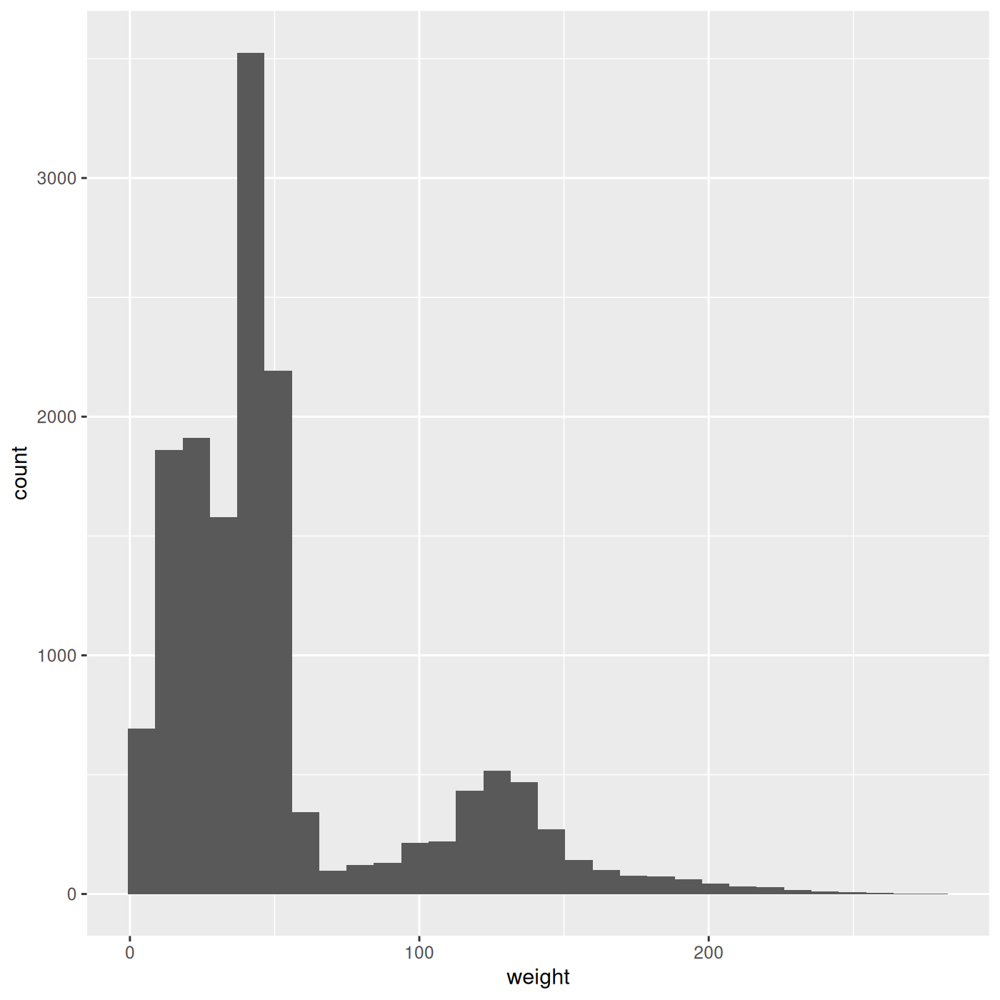
This distribution has two humps: a big cluster of light animals under about 50 grams, and a second, smaller cluster somewhere around 90 to 150 grams. A distribution with two humps is usually a hint that we are not looking at one thing, but at two or more different things mixed together. So our research question for this episode is:
Why is the distribution of rodent weights bimodal?
Our leading hypothesis is the obvious one for anyone who has looked at a rodent: the dataset contains multiple species, and different species are different sizes. Smaller species make up the first hump, larger species the second.
Manipulating data
The trouble is that none of the tools we have learned so far can test
this. summary() and quantile() describe the
whole dataset at once. To explain structure within a dataset, we need to
be able to split it into pieces, compute something for each piece, and
compare the results. That is exactly what the dplyr and
tidyr packages let us do.
Here’s how we’ll proceed:
- Narrow the data to the rows and columns our question needs
(
select(),filter(), and the pipe -%>%or|>-). - Test the hypothesis by calculating weights per species
(
group_by()andsummarize()). - Look at what’s left over once species is accounted for, which is
where sex and individual variation live (
group_by()withmutate()). - Check whether body size changes over time (
mutate()and working with dates with thelubridatepackage). - Build a shareable summary table and export it
(
pivot_wider()andwrite_csv()).
By the end we should have an answer, a plot, and a CSV file we could hand to a collaborator.
Selecting and filtering
Our question is about weight and species. The surveys data.frame has 13 columns, most of which are irrelevant right now, and it has rows where weight was never recorded. Before we can investigate anything, we need to cut the data down to what is actually usable.
After EDA, this is almost always the first step of a real analysis,
and dplyr gives us two functions for it:
select(), which picks columns, and filter(),
which picks rows.
Between select() and filter(), it can be
hard to remember which operates on columns and which operates on rows.
select() has a
c for columns and
filter() has an
r for rows.
select(): choosing columns
To use the select() function, the first argument is the
name of the data.frame, and the rest of the arguments are the names of
the columns you want. For our question, the columns that matter are the
identity of the animal and its measurements:
R
select(surveys, species_id, sex, plot_id, weight, hindfoot_length)
OUTPUT
# A tibble: 16,878 × 5
species_id sex plot_id weight hindfoot_length
<chr> <chr> <dbl> <dbl> <dbl>
1 NL M 2 NA 32
2 NL M 3 NA 33
3 DM F 2 NA 37
4 DM M 7 NA 36
5 DM M 3 NA 35
6 PF M 1 NA 14
7 PE F 2 NA NA
8 DM M 1 NA 37
9 DM F 1 NA 34
10 PF F 6 NA 20
# ℹ 16,868 more rowsThe columns are arranged in the order we specified inside the function, which is useful for putting the most important variables first.
Sometimes it’s easier to say what you don’t want. To drop specific
columns, put a - in front of them:
R
select(surveys, -record_id, -genus, -species)
OUTPUT
# A tibble: 16,878 × 10
month day year plot_id species_id sex hindfoot_length weight taxa
<dbl> <dbl> <dbl> <dbl> <chr> <chr> <dbl> <dbl> <chr>
1 7 16 1977 2 NL M 32 NA Rodent
2 7 16 1977 3 NL M 33 NA Rodent
3 7 16 1977 2 DM F 37 NA Rodent
4 7 16 1977 7 DM M 36 NA Rodent
5 7 16 1977 3 DM M 35 NA Rodent
6 7 16 1977 1 PF M 14 NA Rodent
7 7 16 1977 2 PE F NA NA Rodent
8 7 16 1977 1 DM M 37 NA Rodent
9 7 16 1977 1 DM F 34 NA Rodent
10 7 16 1977 6 PF F 20 NA Rodent
# ℹ 16,868 more rows
# ℹ 1 more variable: plot_type <chr>We can also select columns based on a property rather than by name,
using the where() function. A useful question at this stage
of an analysis is “which of my variables could I even take a mean of?”
Those are the numeric ones:
R
select(surveys, where(is.numeric))
OUTPUT
# A tibble: 16,878 × 7
record_id month day year plot_id hindfoot_length weight
<dbl> <dbl> <dbl> <dbl> <dbl> <dbl> <dbl>
1 1 7 16 1977 2 32 NA
2 2 7 16 1977 3 33 NA
3 3 7 16 1977 2 37 NA
4 4 7 16 1977 7 36 NA
5 5 7 16 1977 3 35 NA
6 6 7 16 1977 1 14 NA
7 7 7 16 1977 2 NA NA
8 8 7 16 1977 1 37 NA
9 9 7 16 1977 1 34 NA
10 10 7 16 1977 6 20 NA
# ℹ 16,868 more rowsselect() is more flexible than we have space to show. A
few other things it accepts:
- Column positions:
select(surveys, c(3:5, 10))gives you the 3rd, 4th, 5th, and 10th columns. Be careful with this, since you are being less explicit about what you want, and the result will change if the column order changes. - Other helper functions like
contains(),starts_with(), andends_with()for matching column names, andwhere(anyNA)to find columns containing missing values.
Running ?dplyr_tidy_select will show you the full list.
filter(): choosing rows
The filter() function keeps rows that meet a condition.
The condition we most need right now is that weight was actually
recorded. The is.na() function asks “is this value
missing?”, and putting ! in front of something means “not”, so
!is.na(weight) means “weight is not missing”:
R
filter(surveys, !is.na(weight))
OUTPUT
# A tibble: 15,186 × 13
record_id month day year plot_id species_id sex hindfoot_length weight
<dbl> <dbl> <dbl> <dbl> <dbl> <chr> <chr> <dbl> <dbl>
1 63 8 19 1977 3 DM M 35 40
2 64 8 19 1977 7 DM M 37 48
3 65 8 19 1977 4 DM F 34 29
4 66 8 19 1977 4 DM F 35 46
5 67 8 19 1977 7 DM M 35 36
6 68 8 19 1977 8 DO F 32 52
7 69 8 19 1977 2 PF M 15 8
8 70 8 19 1977 3 OX F 21 22
9 71 8 19 1977 7 DM F 36 35
10 74 8 19 1977 8 PF M 12 7
# ℹ 15,176 more rows
# ℹ 4 more variables: genus <chr>, species <chr>, taxa <chr>, plot_type <chr>We’ve gone from 16878 rows to 15186 rows. Rather
than handling them with na.rm = TRUE every time we do a
calculation, we are now dealing with them structurally: we remove them
once, at the start, and then everything downstream is clean.
This function works with all the comparison operators. To get all the rows where year is equal to 1985:
R
filter(surveys, year == 1985)
OUTPUT
# A tibble: 1,438 × 13
record_id month day year plot_id species_id sex hindfoot_length weight
<dbl> <dbl> <dbl> <dbl> <dbl> <chr> <chr> <dbl> <dbl>
1 9790 1 19 1985 16 RM F 16 4
2 9791 1 19 1985 17 OT F 20 16
3 9792 1 19 1985 6 DO M 35 48
4 9793 1 19 1985 12 DO F 35 40
5 9794 1 19 1985 24 RM M 16 4
6 9795 1 19 1985 12 DO M 34 48
7 9796 1 19 1985 6 DM F 37 35
8 9797 1 19 1985 14 DM M 36 45
9 9798 1 19 1985 6 DM F 36 38
10 9799 1 19 1985 19 RM M 16 4
# ℹ 1,428 more rows
# ℹ 4 more variables: genus <chr>, species <chr>, taxa <chr>, plot_type <chr>The == sign means “is equal to”. There are several other
operators we can use: >, >=,
<, <=, and != (not equal
to). Another useful operator is %in%, which asks if the
value on the left-hand side is found anywhere in the vector on the
right-hand side. For example, to pull out two particular species:
R
filter(surveys, species_id %in% c("RM", "DO"))
OUTPUT
# A tibble: 2,835 × 13
record_id month day year plot_id species_id sex hindfoot_length weight
<dbl> <dbl> <dbl> <dbl> <dbl> <chr> <chr> <dbl> <dbl>
1 68 8 19 1977 8 DO F 32 52
2 292 10 17 1977 3 DO F 36 33
3 294 10 17 1977 3 DO F 37 50
4 311 10 17 1977 19 RM M 18 13
5 317 10 17 1977 17 DO F 32 48
6 323 10 17 1977 17 DO F 33 31
7 337 10 18 1977 8 DO F 35 41
8 356 11 12 1977 1 DO F 32 44
9 378 11 12 1977 1 DO M 33 48
10 397 11 13 1977 17 RM F 16 7
# ℹ 2,825 more rows
# ℹ 4 more variables: genus <chr>, species <chr>, taxa <chr>, plot_type <chr>We can also combine conditions in one filter() call, using
& for “and” and | for “or”. Here we get
rows from 1988 or earlier that have a recorded hindfoot length:
R
filter(surveys, year <= 1988 & !is.na(hindfoot_length))
OUTPUT
# A tibble: 12,779 × 13
record_id month day year plot_id species_id sex hindfoot_length weight
<dbl> <dbl> <dbl> <dbl> <dbl> <chr> <chr> <dbl> <dbl>
1 1 7 16 1977 2 NL M 32 NA
2 2 7 16 1977 3 NL M 33 NA
3 3 7 16 1977 2 DM F 37 NA
4 4 7 16 1977 7 DM M 36 NA
5 5 7 16 1977 3 DM M 35 NA
6 6 7 16 1977 1 PF M 14 NA
7 8 7 16 1977 1 DM M 37 NA
8 9 7 16 1977 1 DM F 34 NA
9 10 7 16 1977 6 PF F 20 NA
10 11 7 16 1977 5 DS F 53 NA
# ℹ 12,769 more rows
# ℹ 4 more variables: genus <chr>, species <chr>, taxa <chr>, plot_type <chr>Challenge 1: Narrowing down to a subset of interest
The genus Dipodomys (kangaroo rats) contains some of the larger animals in this dataset, so it’s a good candidate for the second hump of our histogram. The species IDs for this genus are DM, DO, and DS.
Make a data.frame called dipodomys containing only the
Dipodomys records that have a recorded weight.
R
dipodomys <- filter(surveys, species_id %in% c("DM", "DO", "DS") & !is.na(weight))
You could also write this with three | conditions, but
%in% is much more compact:
R
dipodomys <- filter(surveys,
(species_id == "DM" | species_id == "DO" | species_id == "DS") &
!is.na(weight))
Note the parentheses in the second version. Without them, the & would only apply to the last condition.
Challenge 1: Narrowing down to a subset of interest (continued)
What is the mean weight of these animals? How does it compare to the mean weight of the whole dataset (which was 53.22 grams)?
R
mean(dipodomys$weight)
OUTPUT
[1] 62.67743Considerably heavier than the dataset as a whole, which is consistent with our hypothesis that these larger species are responsible for the upper hump of the distribution. But this is only three species out of many, and we had to know their IDs in advance. We need a way to do this for all species at once.
The pipe %>% or |>
Notice that in the challenge above, we needed to do two things at
once: pick certain rows and ignore missing weights. And really we should
also be dropping the columns we don’t need. What happens when we want to
combine select() and filter()?
We have a couple of options. First, we could use nested functions:
R
filter(select(surveys, -record_id, -genus, -species), !is.na(weight))
OUTPUT
# A tibble: 15,186 × 10
month day year plot_id species_id sex hindfoot_length weight taxa
<dbl> <dbl> <dbl> <dbl> <chr> <chr> <dbl> <dbl> <chr>
1 8 19 1977 3 DM M 35 40 Rodent
2 8 19 1977 7 DM M 37 48 Rodent
3 8 19 1977 4 DM F 34 29 Rodent
4 8 19 1977 4 DM F 35 46 Rodent
5 8 19 1977 7 DM M 35 36 Rodent
6 8 19 1977 8 DO F 32 52 Rodent
7 8 19 1977 2 PF M 15 8 Rodent
8 8 19 1977 3 OX F 21 22 Rodent
9 8 19 1977 7 DM F 36 35 Rodent
10 8 19 1977 8 PF M 12 7 Rodent
# ℹ 15,176 more rows
# ℹ 1 more variable: plot_type <chr>This is already hard to read with two functions, and it becomes nearly impossible with five.
An alternative approach is to create intermediate objects:
R
surveys_sub <- select(surveys, -record_id, -genus, -species)
surveys_weight <- filter(surveys_sub, !is.na(weight))
This is easier to read, since the steps are in order, but after enough steps we are left with a cluttered environment full of near-identical objects with confusing names.
An elegant solution is an operator called the pipe, which comes in
two variations: %>% and |>. They both
work the same and are replacable the one with the other in the latest
versions of R. You can insert it with the keyboard shortcut
Shift+Cmd+M (Mac) or Shift+Ctrl+M (Windows):
R
surveys %>%
select(-record_id, -genus, -species) %>%
filter(!is.na(weight))
OUTPUT
# A tibble: 15,186 × 10
month day year plot_id species_id sex hindfoot_length weight taxa
<dbl> <dbl> <dbl> <dbl> <chr> <chr> <dbl> <dbl> <chr>
1 8 19 1977 3 DM M 35 40 Rodent
2 8 19 1977 7 DM M 37 48 Rodent
3 8 19 1977 4 DM F 34 29 Rodent
4 8 19 1977 4 DM F 35 46 Rodent
5 8 19 1977 7 DM M 35 36 Rodent
6 8 19 1977 8 DO F 32 52 Rodent
7 8 19 1977 2 PF M 15 8 Rodent
8 8 19 1977 3 OX F 21 22 Rodent
9 8 19 1977 7 DM F 36 35 Rodent
10 8 19 1977 8 PF M 12 7 Rodent
# ℹ 15,176 more rows
# ℹ 1 more variable: plot_type <chr>The pipe takes the thing on the left-hand side and inserts it as the
first argument of the function on the right-hand side. By putting each
function on a new line, we build a readable pipeline. It can be useful
to think of this as an assembly line for our data: it starts at the top,
gets piped into select() and comes out modified, then gets
sent into filter() where it is modified further, and the
final product prints to the console.
It can also be helpful to read the pipe as meaning “and then”. Since many tidyverse functions are named with verbs, a pipeline reads almost like a sentence: take surveys, and then select these columns, and then filter these rows.
Now we can build the subset we actually want for our analysis. We
need species_id (to group by), sex and
plot_id (for later), and weight and
hindfoot_length (our measurements). And we need rows with a
weight value:
R
surveys_weight <- surveys %>%
filter(!is.na(weight)) %>%
select(species_id, sex, plot_id, year, month, day, weight, hindfoot_length)
surveys_weight
OUTPUT
# A tibble: 15,186 × 8
species_id sex plot_id year month day weight hindfoot_length
<chr> <chr> <dbl> <dbl> <dbl> <dbl> <dbl> <dbl>
1 DM M 3 1977 8 19 40 35
2 DM M 7 1977 8 19 48 37
3 DM F 4 1977 8 19 29 34
4 DM F 4 1977 8 19 46 35
5 DM M 7 1977 8 19 36 35
6 DO F 8 1977 8 19 52 32
7 PF M 2 1977 8 19 8 15
8 OX F 3 1977 8 19 22 21
9 DM F 7 1977 8 19 35 36
10 PF M 8 1977 8 19 7 12
# ℹ 15,176 more rowsThis surveys_weight object is the dataset we will use
for the rest of the episode. Notice that we did not overwrite surveys.
If we make a mistake, or realize we need a column we dropped, the full
data is still sitting there untouched in the R environment.
Challenge 2: Using pipes
Use the surveys data to make a data.frame that has the columns
species_id, sex, and weight,
containing only data from the year 1988 where sex was
recorded.
R
surveys_1988 <- surveys %>%
filter(year == 1988 & !is.na(sex)) %>%
select(species_id, sex, weight)
Make sure to filter() before you select().
You need the year column for filtering rows, but it is discarded in the
select() step, so doing it the other way around gives you
an error:
R
surveys %>%
select(species_id, sex, weight) %>%
filter(year == 1988 & !is.na(sex))
ERROR
Error in `filter()`:
ℹ In argument: `year == 1988 & !is.na(sex)`.
Caused by error in `year == 1988`:
! comparison (==) is possible only for atomic and list typesThis is a very common error, and the message is a useful one to learn to recognize: R is telling you that the column you asked about doesn’t exist, because you removed it a step earlier.
Also make sure to use == instead of = when
filtering for rows where year is equal to 1988.
Grouping: The split-apply-combine approach
Now we can get to the actual question. Our hypothesis is that the two humps in the weight distribution correspond to different species. To test it, we need the mean weight of each species so we can see whether they fall into distinct groups.
This is an instance of a very general pattern called the
split-apply-combine approach: you split the data into groups, apply some
analysis to each group, and combine the results back together into a
single table. An enormous proportion of data analysis tasks fit this
pattern, and dplyr has two functions that implement
it:group_by() and summarize().
group_by() takes a data.frame and the names of one or
more columns containing categorical values that define the groups.
summarize() then collapses each group down to a one-row
summary, giving us back a data.frame with one row per group.
summary() vs. summarize()
These two names are confusingly similar, and they do quite different things.
-
summary()is a base R function. You hand it a data.frame and it decides what to show you: for every column, a fixed set of statistics (min, median, mean, quartiles, max, NA count for numeric columns). -summarize()is adplyrfunction. You decide what to calculate, you name the resulting columns, and crucially it can operate per group when combined withgroup_by().
summary() is for a quick look at everything.
summarize() is for computing specific things you’ve decided
you want. You can also spell it summarise() if you prefer
British English; dplyr accepts both.
Let’s calculate the mean weight of each species:
R
surveys_weight %>%
group_by(species_id) %>%
summarize(mean_weight = mean(weight))
OUTPUT
# A tibble: 18 × 2
species_id mean_weight
<chr> <dbl>
1 BA 7
2 DM 42.5
3 DO 48.9
4 DS 120.
5 NL 158.
6 OL 32.6
7 OT 23.8
8 OX 21
9 PE 21.7
10 PF 7.09
11 PH 30.7
12 PM 21.6
13 PP 16.3
14 RF 13.4
15 RM 10.3
16 SF 54.8
17 SH 75.0
18 SS 93.5 There is our answer beginning to appear. The mean weights are not
spread evenly, there are species averaging around 8 grams, others around
40 or 50, and some well over 100. Let’s make this easier to read by
sorting it, using the arrange() function:
R
surveys_weight %>%
group_by(species_id) %>%
summarize(mean_weight = mean(weight)) %>%
arrange(mean_weight)
OUTPUT
# A tibble: 18 × 2
species_id mean_weight
<chr> <dbl>
1 BA 7
2 PF 7.09
3 RM 10.3
4 RF 13.4
5 PP 16.3
6 OX 21
7 PM 21.6
8 PE 21.7
9 OT 23.8
10 PH 30.7
11 OL 32.6
12 DM 42.5
13 DO 48.9
14 SF 54.8
15 SH 75.0
16 SS 93.5
17 DS 120.
18 NL 158. To reverse the order, wrap the column name in
desc():
R
surveys_weight %>%
group_by(species_id) %>%
summarize(mean_weight = mean(weight)) %>%
arrange(desc(mean_weight))
OUTPUT
# A tibble: 18 × 2
species_id mean_weight
<chr> <dbl>
1 NL 158.
2 DS 120.
3 SS 93.5
4 SH 75.0
5 SF 54.8
6 DO 48.9
7 DM 42.5
8 OL 32.6
9 PH 30.7
10 OT 23.8
11 PE 21.7
12 PM 21.6
13 OX 21
14 PP 16.3
15 RF 13.4
16 RM 10.3
17 PF 7.09
18 BA 7 Now the structure is clear. A handful of species (NL, DS, SH, SF)
have mean weights well above 70 grams, while the great majority sit
below 50. But a mean on its own can be misleading, a species averaging
100 grams tells us very little if we only ever caught two of them. We
should also count how many observations are in each group. The function
n() does exactly that, and summarize() lets us
define several columns in one call:
R
surveys_weight %>%
group_by(species_id) %>%
summarize(mean_weight = mean(weight),
n = n()) %>%
arrange(desc(mean_weight))
OUTPUT
# A tibble: 18 × 3
species_id mean_weight n
<chr> <dbl> <int>
1 NL 158. 824
2 DS 120. 2255
3 SS 93.5 2
4 SH 75.0 95
5 SF 54.8 5
6 DO 48.9 1428
7 DM 42.5 5481
8 OL 32.6 758
9 PH 30.7 13
10 OT 23.8 822
11 PE 21.7 828
12 PM 21.6 409
13 OX 21 6
14 PP 16.3 368
15 RF 13.4 62
16 RM 10.3 1314
17 PF 7.09 513
18 BA 7 3This is the answer to our research question. DS has a mean weight of about 120 grams with over 2000 observations, and NL averages around 158 grams with nearly 800 observations. These are not rare flukes, they are genuinely abundant large species. Meanwhile DM averages about 42 grams with over 5000 observations, making it the single biggest contributor to the lower hump.
The bimodality is real, and it is a species effect. The dataset is dominated by a very large number of small-bodied individuals (mostly DM, PP, PF, RM) plus a substantial number of large-bodied ones (DS, NL), with comparatively few species in between. Mixing those together produces two humps.
We can confirm this visually by coloring the original histogram by species:
R
surveys_weight %>%
ggplot(aes(x = weight, fill = species_id)) +
geom_histogram()
OUTPUT
`stat_bin()` using `bins = 30`. Pick better value `binwidth`.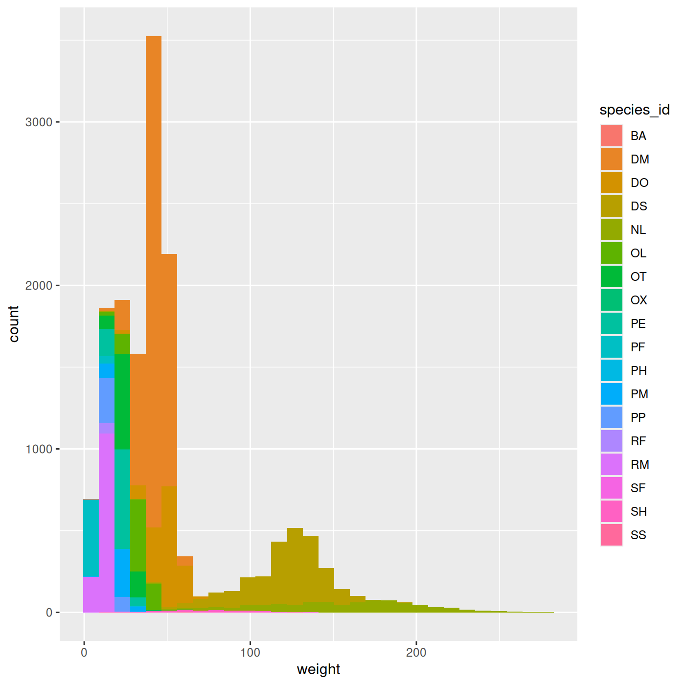
The legend is unwieldy with this many species, but the point comes across: the two humps are composed of different species.
Grouping by more than one variable
You will often want to form groups from combinations of columns. For instance, we might wonder whether the sexes differ in weight within each species. All we have to do is add another column to group_by():
R
surveys_weight %>%
group_by(species_id, sex) %>%
summarize(mean_weight = mean(weight),
n = n())
OUTPUT
`summarise()` has regrouped the output.
ℹ Summaries were computed grouped by species_id and sex.
ℹ Output is grouped by species_id.
ℹ Use `summarise(.groups = "drop_last")` to silence this message.
ℹ Use `summarise(.by = c(species_id, sex))` for per-operation grouping
(`?dplyr::dplyr_by`) instead.OUTPUT
# A tibble: 46 × 4
# Groups: species_id [18]
species_id sex mean_weight n
<chr> <chr> <dbl> <int>
1 BA M 7 3
2 DM F 40.7 2460
3 DM M 44.0 3013
4 DM <NA> 37 8
5 DO F 48.4 679
6 DO M 49.3 748
7 DO <NA> 44 1
8 DS F 118. 1055
9 DS M 123. 1184
10 DS <NA> 121. 16
# ℹ 36 more rowsIf you look at the output printed in your console, you will see lines like:
OUTPUT
# A tibble: 46 × 4
# Groups: species_id [18]That tells us we have 46 rows, 4 columns, and a grouping by
species_id with 18 groups. We see something similar if we
use group_by() on its own:
R
surveys_weight %>%
group_by(species_id, sex)
OUTPUT
# A tibble: 15,186 × 8
# Groups: species_id, sex [46]
species_id sex plot_id year month day weight hindfoot_length
<chr> <chr> <dbl> <dbl> <dbl> <dbl> <dbl> <dbl>
1 DM M 3 1977 8 19 40 35
2 DM M 7 1977 8 19 48 37
3 DM F 4 1977 8 19 29 34
4 DM F 4 1977 8 19 46 35
5 DM M 7 1977 8 19 36 35
6 DO F 8 1977 8 19 52 32
7 PF M 2 1977 8 19 8 15
8 OX F 3 1977 8 19 22 21
9 DM F 7 1977 8 19 35 36
10 PF M 8 1977 8 19 7 12
# ℹ 15,176 more rowsWe get back the whole data.frame, apparently unchanged, but with
grouping information attached. group_by() doesn’t change
the data, it changes how later functions treat the data.
Groups persist through a pipeline, and if you assign the result to an object, that object stays grouped. This can produce baffling results later on when you have forgotten the grouping is there. It is therefore a good habit to call ungroup() at the end of any pipeline containing group_by():
R
species_weights <- surveys_weight %>%
group_by(species_id) %>%
summarize(mean_weight = mean(weight),
n = n()) %>%
arrange(desc(mean_weight)) %>%
ungroup()
species_weights
OUTPUT
# A tibble: 18 × 3
species_id mean_weight n
<chr> <dbl> <int>
1 NL 158. 824
2 DS 120. 2255
3 SS 93.5 2
4 SH 75.0 95
5 SF 54.8 5
6 DO 48.9 1428
7 DM 42.5 5481
8 OL 32.6 758
9 PH 30.7 13
10 OT 23.8 822
11 PE 21.7 828
12 PM 21.6 409
13 OX 21 6
14 PP 16.3 368
15 RF 13.4 62
16 RM 10.3 1314
17 PF 7.09 513
18 BA 7 3Now the output just says # A tibble: 21 × 3 at the top,
with no groups.
Our result is much longer now, because we have one row per species-and-sex combination. Many of the differences between the sexes are small, but notice that there are rows where sex is NA. Those are animals whose sex was never recorded.
Why we filtered NA weights early
Before we removed rows with missing weights at the very beginning of the pipeline. Here is why that mattered.
Had we not done so, we would have had to write
mean(weight, na.rm = TRUE) here, and for any group where
every weight was missing, na.rm = TRUE would have removed
all the values before calculating the mean. The mean of nothing is NaN
(“Not a Number”), and our results table would have been peppered with
them.
By filtering once at the start, those groups simply never form, and every number in our output is a real number. In general, dealing with missing data structurally and early produces cleaner results than patching it at every calculation.
Challenge 3: Extending the summary
Last episode we calculated quantiles of weight across the entire
dataset using quantile(). Now we can do it per species. Add
columns to the species summary giving the minimum weight, the 10th
percentile, the 90th percentile, and the maximum, for each species.
Hint: quantile(weight, probs = 0.1)
gives you a single quantile.
R
surveys_weight %>%
group_by(species_id) %>%
summarize(min = min(weight),
q10 = quantile(weight, probs = 0.1),
q90 = quantile(weight, probs = 0.9),
max = max(weight)) %>%
ungroup()
OUTPUT
# A tibble: 18 × 5
species_id min q10 q90 max
<chr> <dbl> <dbl> <dbl> <dbl>
1 BA 6 6.2 7.8 8
2 DM 13 34 50 66
3 DO 12 39 57 73
4 DS 12 87 146 190
5 NL 30 99 215. 278
6 OL 11 24 41 56
7 OT 5 18.1 29 45
8 OX 18 19 23 24
9 PE 8 17 27 40
10 PF 4 6 8 15
11 PH 23 25.6 34 39
12 PM 7 14 27 35
13 PP 7 12 21 28
14 RF 9 11 16 18
15 RM 4 8 13 20
16 SF 46 46.4 69.2 82
17 SH 16 42.4 106. 140
18 SS 57 64.3 123. 130This is the same calculation we did last episode, but now split by species. Notice how much more informative it is: the whole-dataset range of 4 to 278 grams was really describing several different animals at once.
Challenge 3: Extending the summary (continued)
What do you think would happen if you ran
group_by(weight) instead of
group_by(species_id)? Try it with
summarize(n = n(), and explain the result.
R
surveys_weight %>%
group_by(weight) %>%
summarize(n = n())
OUTPUT
# A tibble: 252 × 2
weight n
<dbl> <int>
1 4 15
2 5 45
3 6 132
4 7 254
5 8 247
6 9 265
7 10 340
8 11 307
9 12 188
10 13 135
# ℹ 242 more rowsgroup_by() will happily group by a continuous variable,
but it creates one group for every distinct value, which here gives us a
count of how many animals weighed exactly 10 grams, exactly 11 grams,
and so on. That is occasionally useful, but it is not a summary in any
meaningful sense. group_by() is designed for categorical
variables, and it is up to you to supply a sensible one.
Making new columns with mutate()
We have explained the bimodality: it comes from mixing species of
very different sizes. But that raises a follow-up question. Within a
single species, animals still vary, some DM individuals are
heavier than others. How much variation is there within species, and can
we find the unusually large and unusually small individuals?
To answer this we need something slightly different. We don’t want
one row per species anymore, we want to keep every individual animal,
but attach to each one the mean weight of its species so we can compare.
For that, we combine group_by() with mutate()
instead of summarize().
What is mutate()
Before we do that, let’s introduce mutate() properly. It
creates new columns based on existing ones. For instance, our weights
are in grams, but suppose a collaborator works in kilograms:
R
surveys_weight %>%
mutate(weight_kg = weight / 1000)
OUTPUT
# A tibble: 15,186 × 9
species_id sex plot_id year month day weight hindfoot_length weight_kg
<chr> <chr> <dbl> <dbl> <dbl> <dbl> <dbl> <dbl> <dbl>
1 DM M 3 1977 8 19 40 35 0.04
2 DM M 7 1977 8 19 48 37 0.048
3 DM F 4 1977 8 19 29 34 0.029
4 DM F 4 1977 8 19 46 35 0.046
5 DM M 7 1977 8 19 36 35 0.036
6 DO F 8 1977 8 19 52 32 0.052
7 PF M 2 1977 8 19 8 15 0.008
8 OX F 3 1977 8 19 22 21 0.022
9 DM F 7 1977 8 19 35 36 0.035
10 PF M 8 1977 8 19 7 12 0.007
# ℹ 15,176 more rowsYou can create multiple columns in one mutate() call,
and they are created in the order you write them, which means you can
refer to a new column while creating the next one:
R
surveys_weight %>%
mutate(weight_kg = weight / 1000,
weight_lbs = weight_kg * 2.2)
OUTPUT
# A tibble: 15,186 × 10
species_id sex plot_id year month day weight hindfoot_length weight_kg
<chr> <chr> <dbl> <dbl> <dbl> <dbl> <dbl> <dbl> <dbl>
1 DM M 3 1977 8 19 40 35 0.04
2 DM M 7 1977 8 19 48 37 0.048
3 DM F 4 1977 8 19 29 34 0.029
4 DM F 4 1977 8 19 46 35 0.046
5 DM M 7 1977 8 19 36 35 0.036
6 DO F 8 1977 8 19 52 32 0.052
7 PF M 2 1977 8 19 8 15 0.008
8 OX F 3 1977 8 19 22 21 0.022
9 DM F 7 1977 8 19 35 36 0.035
10 PF M 8 1977 8 19 7 12 0.007
# ℹ 15,176 more rows
# ℹ 1 more variable: weight_lbs <dbl>
group_by() with mutate()
Now for the within-species comparison. If we
group_by(species_id) and then mutate(), the
calculation is performed per group, but the result is written back onto
every row of that group:
R
surveys_weight %>%
group_by(species_id) %>%
mutate(mean_weight = mean(weight),
weight_diff = weight - mean_weight)
OUTPUT
# A tibble: 15,186 × 10
# Groups: species_id [18]
species_id sex plot_id year month day weight hindfoot_length mean_weight
<chr> <chr> <dbl> <dbl> <dbl> <dbl> <dbl> <dbl> <dbl>
1 DM M 3 1977 8 19 40 35 42.5
2 DM M 7 1977 8 19 48 37 42.5
3 DM F 4 1977 8 19 29 34 42.5
4 DM F 4 1977 8 19 46 35 42.5
5 DM M 7 1977 8 19 36 35 42.5
6 DO F 8 1977 8 19 52 32 48.9
7 PF M 2 1977 8 19 8 15 7.09
8 OX F 3 1977 8 19 22 21 21
9 DM F 7 1977 8 19 35 36 42.5
10 PF M 8 1977 8 19 7 12 7.09
# ℹ 15,176 more rows
# ℹ 1 more variable: weight_diff <dbl>Our new columns are at the far right and don’t print, so let’s use
select() to look at just the columns of interest. Inside
select() we can use the contains() helper to
grab every column with “weight” in its name:
R
surveys_centered <- surveys_weight %>%
group_by(species_id) %>%
mutate(mean_weight = mean(weight),
weight_diff = weight - mean_weight) %>%
select(species_id, sex, contains("weight"))
surveys_centered
OUTPUT
# A tibble: 15,186 × 5
# Groups: species_id [18]
species_id sex weight mean_weight weight_diff
<chr> <chr> <dbl> <dbl> <dbl>
1 DM M 40 42.5 -2.52
2 DM M 48 42.5 5.48
3 DM F 29 42.5 -13.5
4 DM F 46 42.5 3.48
5 DM M 36 42.5 -6.52
6 DO F 52 48.9 3.13
7 PF M 8 7.09 0.908
8 OX F 22 21 1
9 DM F 35 42.5 -7.52
10 PF M 7 7.09 -0.0916
# ℹ 15,176 more rowsThis is the key difference between the two approaches:
-
group_by()+summarize()gives you one row per group. Use it when you want a summary table. -
group_by()+mutate()gives you all your original rows, with a per-group value added to each. Use it when you want to compare each observation to its group.
For every DM individual, the mean_weight column shows
the same number, the mean for DM. The weight_diff column
then tells us how far above or below its species average each animal is.
This is often called centering, and it’s a very common operation.
Now we can do something we couldn’t before: plot the within-species variation for all species on the same axis, because we have removed the between-species differences.
R
surveys_centered %>%
ggplot(aes(x = weight_diff)) +
geom_histogram()
OUTPUT
`stat_bin()` using `bins = 30`. Pick better value `binwidth`.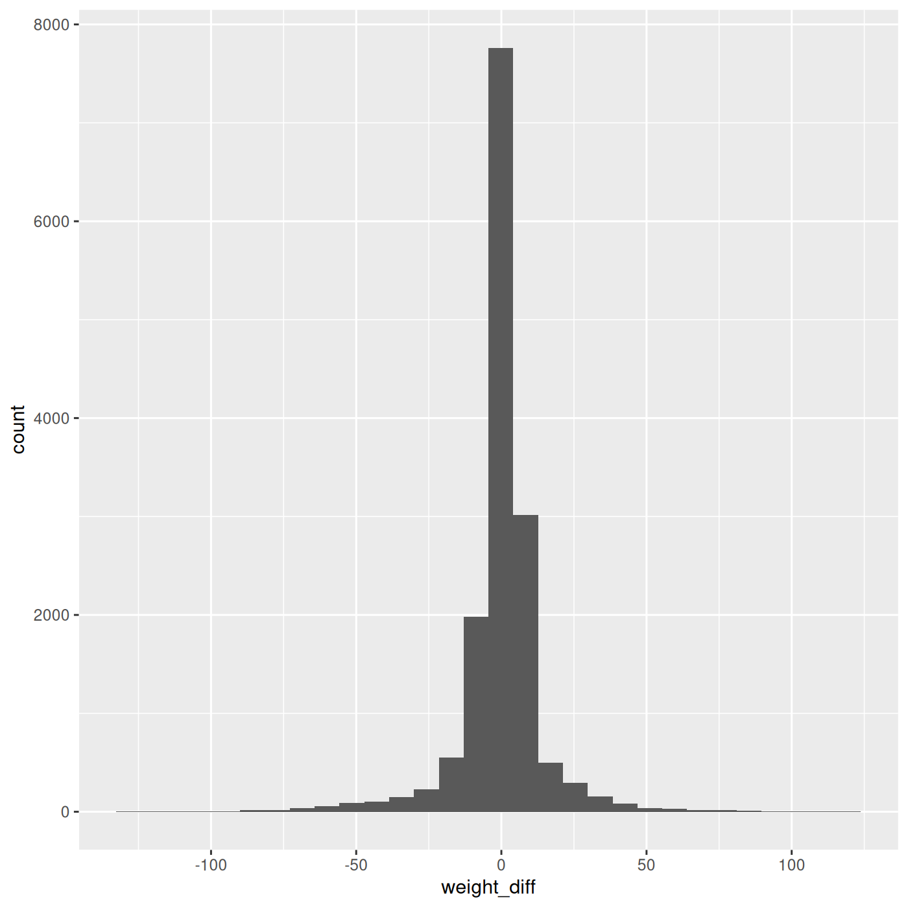
The two humps are gone. Once we subtract each species’ own mean, what remains is a single distribution centered on zero. This is strong confirmation of our answer: there was never anything strange about rodent weights, we were simply looking at several species at once.
Challenge 4: Finding unusual individuals
Using surveys_centered, find the ten animals that are
furthest above their species’ mean weight. Which species do they belong
to?
Hint: arrange() and head()
will both be useful.
R
surveys_centered %>%
arrange(desc(weight_diff)) %>%
head(10)
OUTPUT
# A tibble: 10 × 5
# Groups: species_id [1]
species_id sex weight mean_weight weight_diff
<chr> <chr> <dbl> <dbl> <dbl>
1 NL M 278 158. 120.
2 NL M 275 158. 117.
3 NL F 274 158. 116.
4 NL M 270 158. 112.
5 NL M 269 158. 111.
6 NL F 264 158. 106.
7 NL M 260 158. 102.
8 NL M 260 158. 102.
9 NL M 259 158. 101.
10 NL M 259 158. 101.These are the individuals most unusual relative to their own species, which is a different question from “which animals are heaviest”. A very heavy NL might be entirely typical for an NL, while a moderately heavy DM could be a remarkable outlier.
In a real analysis these are exactly the records you would want to inspect, since extreme values are sometimes genuine biological variation and sometimes data entry errors.
Working with dates
Our dataset spans 1977 to 1989. A natural next question is whether these animals were getting bigger or smaller over that period. To look at anything over time, we need a proper date.
You’ll notice our data keeps year, month, and day in separate columns. This is deliberate and generally good practice for stored data, because programs like Excel do automatic and sometimes irreversible things to anything that looks like a date. But now that we are in R, we can safely assemble a date column.
First we paste the three pieces together. The paste()
function joins values, with sep controlling the character
placed between them:
R
surveys_weight %>%
mutate(date = paste(year, month, day, sep = "-"))
OUTPUT
# A tibble: 15,186 × 9
species_id sex plot_id year month day weight hindfoot_length date
<chr> <chr> <dbl> <dbl> <dbl> <dbl> <dbl> <dbl> <chr>
1 DM M 3 1977 8 19 40 35 1977-8-19
2 DM M 7 1977 8 19 48 37 1977-8-19
3 DM F 4 1977 8 19 29 34 1977-8-19
4 DM F 4 1977 8 19 46 35 1977-8-19
5 DM M 7 1977 8 19 36 35 1977-8-19
6 DO F 8 1977 8 19 52 32 1977-8-19
7 PF M 2 1977 8 19 8 15 1977-8-19
8 OX F 3 1977 8 19 22 21 1977-8-19
9 DM F 7 1977 8 19 35 36 1977-8-19
10 PF M 8 1977 8 19 7 12 1977-8-19
# ℹ 15,176 more rowsOur new column is created at the far end of the data.frame, so it doesn’t print.
We can use relocate() to move columns inside our data.frame:
R
surveys_weight %>%
mutate(date = paste(year, month, day, sep = "-")) %>%
relocate(date, .after = day)
OUTPUT
# A tibble: 15,186 × 9
species_id sex plot_id year month day date weight hindfoot_length
<chr> <chr> <dbl> <dbl> <dbl> <dbl> <chr> <dbl> <dbl>
1 DM M 3 1977 8 19 1977-8-19 40 35
2 DM M 7 1977 8 19 1977-8-19 48 37
3 DM F 4 1977 8 19 1977-8-19 29 34
4 DM F 4 1977 8 19 1977-8-19 46 35
5 DM M 7 1977 8 19 1977-8-19 36 35
6 DO F 8 1977 8 19 1977-8-19 52 32
7 PF M 2 1977 8 19 1977-8-19 8 15
8 OX F 3 1977 8 19 1977-8-19 22 21
9 DM F 7 1977 8 19 1977-8-19 35 36
10 PF M 8 1977 8 19 1977-8-19 7 12
# ℹ 15,176 more rowsNow we can see a column containing something that looks like a date,
but it is just a character string. R does not yet know it represents a
point in time, so it cannot order it properly or space it correctly on
an axis. To make it a real date, we use the ymd() function
from the lubridate package (already loaded with
tidyverse), which parses a string in year-month-day
order:
R
surveys_dates <- surveys_weight %>%
mutate(date = paste(year, month, day, sep = "-"),
date = ymd(date))
surveys_dates
OUTPUT
# A tibble: 15,186 × 9
species_id sex plot_id year month day weight hindfoot_length date
<chr> <chr> <dbl> <dbl> <dbl> <dbl> <dbl> <dbl> <date>
1 DM M 3 1977 8 19 40 35 1977-08-19
2 DM M 7 1977 8 19 48 37 1977-08-19
3 DM F 4 1977 8 19 29 34 1977-08-19
4 DM F 4 1977 8 19 46 35 1977-08-19
5 DM M 7 1977 8 19 36 35 1977-08-19
6 DO F 8 1977 8 19 52 32 1977-08-19
7 PF M 2 1977 8 19 8 15 1977-08-19
8 OX F 3 1977 8 19 22 21 1977-08-19
9 DM F 7 1977 8 19 35 36 1977-08-19
10 PF M 8 1977 8 19 7 12 1977-08-19
# ℹ 15,176 more rowsThe date column now has type <date>. Note that we
used two separate lines inside one mutate(): the first
creates date as a character string, and the second overwrites it with
the parsed version.
Now we can answer our question. We’ll look at the mean weight per year for a few of the most abundant species, so the result isn’t dominated by rare species with noisy means:
R
surveys_dates %>%
filter(species_id %in% c("DM", "DS", "NL")) %>%
group_by(year, species_id) %>%
summarize(mean_weight = mean(weight)) %>%
ggplot(aes(x = year, y = mean_weight, color = species_id)) +
geom_line()
OUTPUT
`summarise()` has regrouped the output.
ℹ Summaries were computed grouped by year and species_id.
ℹ Output is grouped by year.
ℹ Use `summarise(.groups = "drop_last")` to silence this message.
ℹ Use `summarise(.by = c(year, species_id))` for per-operation grouping
(`?dplyr::dplyr_by`) instead.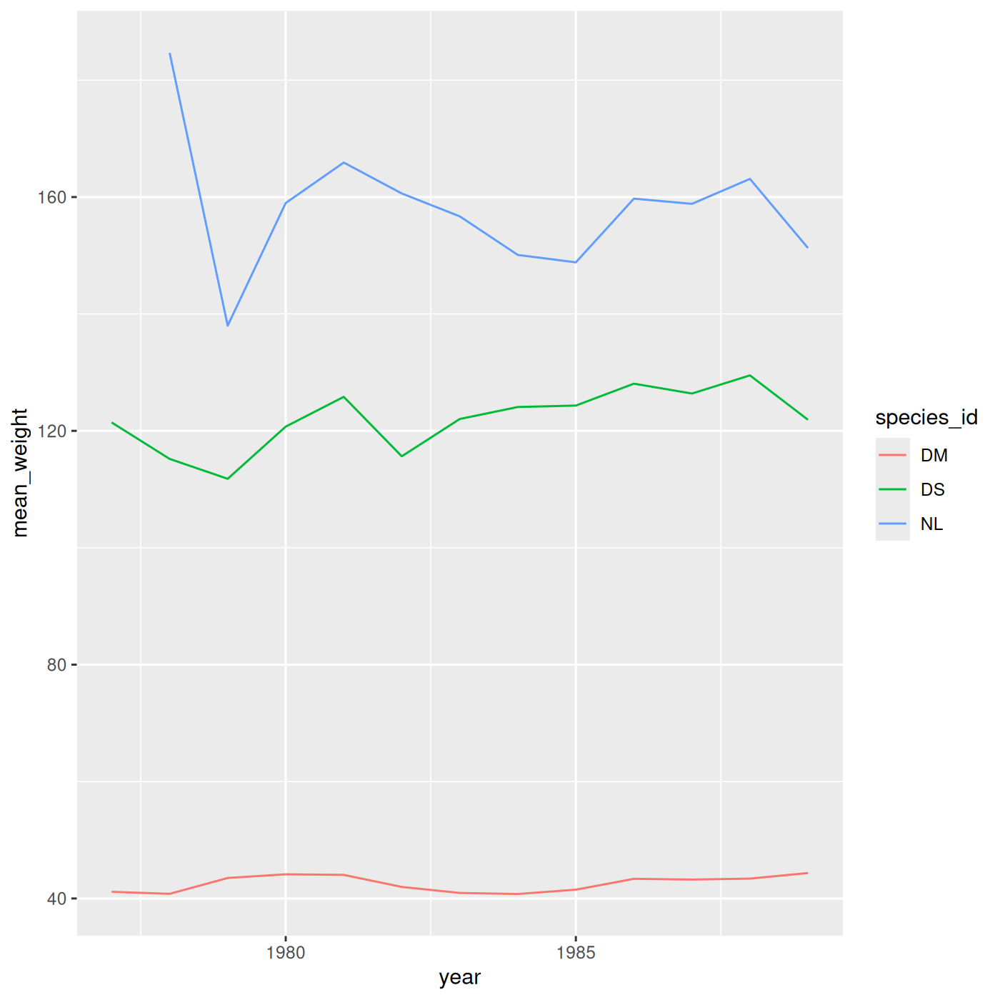
There is no dramatic trend, but there is clear year-to-year fluctuation, and the three species stay well separated throughout. That separation is the same finding as before, now visible across time: species identity is the dominant determinant of body size in this dataset.
Challenge 5: Making a time series
Because ggplot() takes data as its first argument, you
can pipe data straight into it. Build a pipeline from
surveys_dates that counts the total number of animals
caught on each day, and plots that count over time.
R
surveys_dates %>%
group_by(date) %>%
summarize(n = n()) %>%
ggplot(aes(x = date, y = n)) +
geom_line()
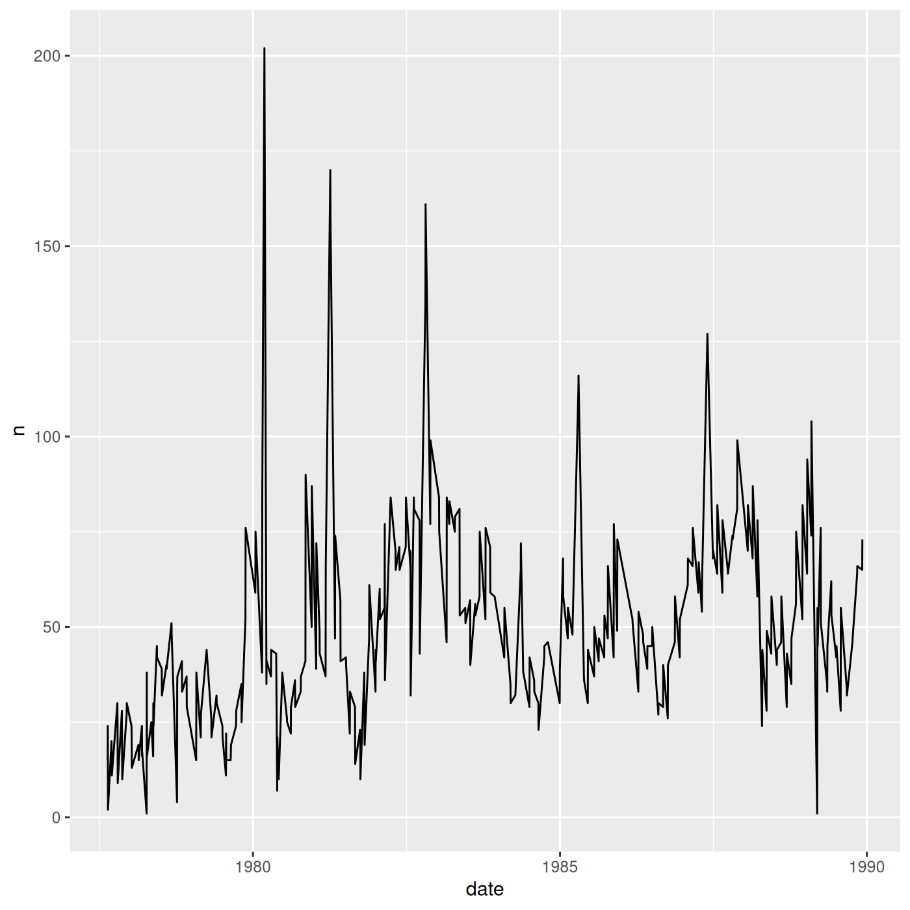
There is a shorter way to write the counting step. The
count() function is a convenient wrapper for
group_by() + summarize(n = n()):
R
surveys_dates %>%
count(date)
OUTPUT
# A tibble: 312 × 2
date n
<date> <int>
1 1977-08-19 15
2 1977-08-20 24
3 1977-08-21 2
4 1977-09-11 20
5 1977-09-12 17
6 1977-09-13 11
7 1977-10-16 30
8 1977-10-17 26
9 1977-10-18 9
10 1977-11-12 28
# ℹ 302 more rowsChallenge 5: Making a time series (continued)
Now split that daily count by sex, so you can see the number of each sex caught over time. You will need to decide how to distinguish the sexes visually.
R
surveys_dates %>%
count(date, sex) %>%
ggplot(aes(x = date, y = n, color = sex)) +
geom_line()
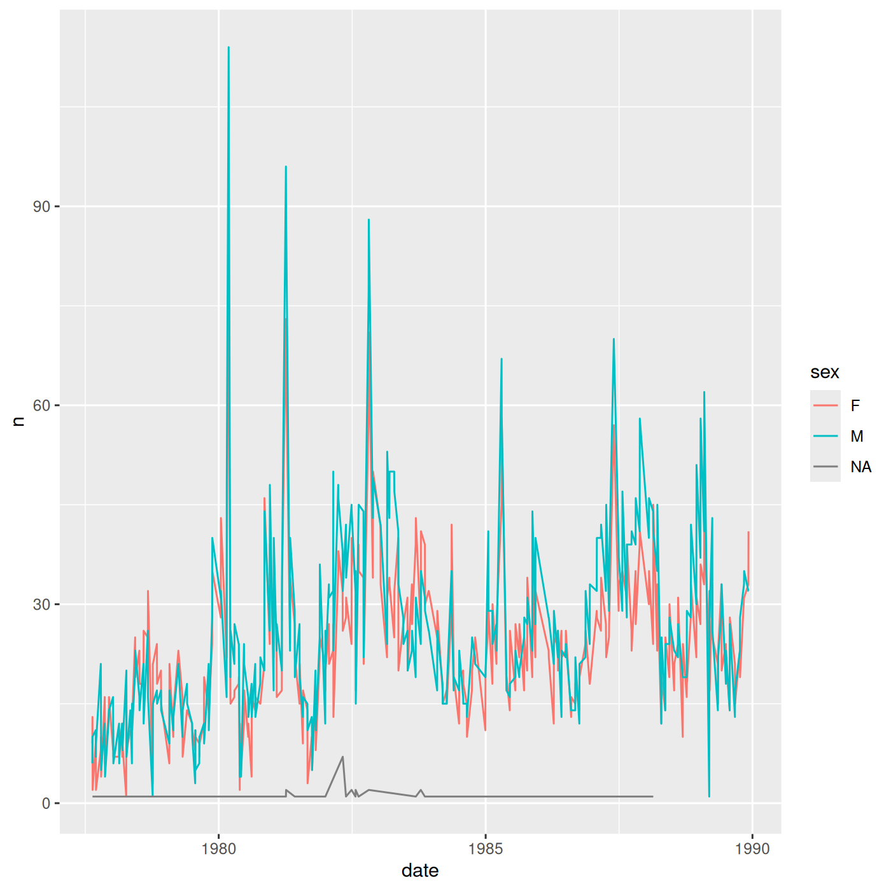
Mapping sex to color gives us one line per sex. Notice that NA appears as its own line, since animals with unrecorded sex are still real captures.
Faceting by sex, or summarizing by month or year instead of day, would make the pattern easier to read.
Reshaping data
We have our answer. The last task is to turn it into something we can hand to someone else.
Suppose a collaborator wants to know whether the size difference between species holds across the study area, or whether some plots have unusually large or small animals. They don’t use R, so they want a spreadsheet with species as rows and plots as columns.
We can start with the familiar split-apply-combine approach, grouping by both species and plot:
R
sp_by_plot <- surveys_weight %>%
group_by(species_id, plot_id) %>%
summarize(mean_weight = mean(weight)) %>%
arrange(species_id, plot_id)
OUTPUT
`summarise()` has regrouped the output.
ℹ Summaries were computed grouped by species_id and plot_id.
ℹ Output is grouped by species_id.
ℹ Use `summarise(.groups = "drop_last")` to silence this message.
ℹ Use `summarise(.by = c(species_id, plot_id))` for per-operation grouping
(`?dplyr::dplyr_by`) instead.R
sp_by_plot
OUTPUT
# A tibble: 300 × 3
# Groups: species_id [18]
species_id plot_id mean_weight
<chr> <dbl> <dbl>
1 BA 3 8
2 BA 21 6.5
3 DM 1 42.7
4 DM 2 42.6
5 DM 3 41.2
6 DM 4 41.9
7 DM 5 42.6
8 DM 6 42.1
9 DM 7 43.2
10 DM 8 43.4
# ℹ 290 more rowsThat contains everything we need, but it is 300 rows long and comparing plots means scrolling up and down. This format, one row per observation with a single value column, is called long format. What our collaborator wants is wide format: one row per species, one column per plot.
The tidyr (already loaded with tidyverse)
package has a pair of functions for moving between these shapes.
pivot_wider() makes data wider, increasing the number of
columns and reducing the number of rows. pivot_longer()
does the opposite.
Making data wider with pivot_wider()
pivot_wider() takes three main arguments:
- the data.frame
-
names_from: which column should supply the names of the new columns? -
values_from: which column should supply the values that fill them?
Any column not used for names_from or
values_from is left alone, and becomes the identifier for
each row.

In our case the new column names come from plot_id and
the values come from mean_weight, which leaves
species_id to identify the rows:
R
sp_by_plot_wide <- sp_by_plot %>%
pivot_wider(names_from = plot_id,
values_from = mean_weight)
sp_by_plot_wide
OUTPUT
# A tibble: 18 × 25
# Groups: species_id [18]
species_id `3` `21` `1` `2` `4` `5` `6` `7` `8`
<chr> <dbl> <dbl> <dbl> <dbl> <dbl> <dbl> <dbl> <dbl> <dbl>
1 BA 8 6.5 NA NA NA NA NA NA NA
2 DM 41.2 41.5 42.7 42.6 41.9 42.6 42.1 43.2 43.4
3 DO 42.7 NA 50.1 50.3 46.8 50.4 49.0 52 49.2
4 DS 128. NA 129. 125. 118. 111. 114. 126. 128.
5 NL 171. 136. 154. 171. 164. 192. 176. 170. 134.
6 OL 32.1 28.6 35.5 34 33.0 32.6 31.8 NA 30.3
7 OT 24.1 24.1 23.7 24.9 26.5 23.6 23.5 22 24.1
8 OX 22 NA NA 22 NA 20 NA NA NA
9 PE 22.7 19.6 21.6 22.0 NA 21 21.6 22.8 19.4
10 PF 7.12 7.23 6.57 6.89 6.75 7.5 7.54 7 6.78
11 PH 28 31 NA NA NA 29 NA NA NA
12 PM 20.1 23.6 23.7 23.9 NA 23.7 22.3 23.4 23
13 PP 17.1 13.6 14.3 16.4 14.8 19.8 16.8 NA 13.9
14 RF 14.8 17 NA 16 NA 14 12.1 13 NA
15 RM 10.3 9.89 10.9 10.6 10.4 10.8 10.6 10.7 9
16 SF NA 49 NA NA NA NA NA NA NA
17 SH 76.0 79.9 NA 88 NA 82.7 NA NA NA
18 SS NA NA NA NA NA NA NA NA NA
# ℹ 15 more variables: `9` <dbl>, `10` <dbl>, `11` <dbl>, `12` <dbl>,
# `13` <dbl>, `14` <dbl>, `15` <dbl>, `16` <dbl>, `17` <dbl>, `18` <dbl>,
# `19` <dbl>, `20` <dbl>, `22` <dbl>, `23` <dbl>, `24` <dbl>Now a collaborator can read across a row to compare plots, or down a column to compare species.
Why are there so many NAs?
A lot of NA values have appeared. These are worth understanding rather than ignoring.
A data.frame must have a value in every row and column, so when a
species-plot combination has no data, pivot_wider() has to
put something there, and it inserts NA. We can verify this. Looking at
the table, species BA has NA in plot 1, so let’s go back to the long
version and search for that combination:
sp_by_plot %>% filter(species_id == “BA” & plot_id == 1) Zero
rows. There is no mean weight for BA in plot 1, either because that
species was never caught there, or because every BA caught there had a
missing weight and was removed by our filter() back in step
1.
So these NAs are not a problem with our pivot, they are a result. They tell us that most species are not found in most plots, which is itself an ecologically meaningful pattern Long format hides this, because absent combinations are simply missing rows. Wide format makes it visible.
The reverse operation: pivot_longer()
Data often arrives from spreadsheets in wide format, with a column
per site, per treatment, or per time point Most tidyverse
tools, and ggplot2 in particular, want long format, where
each variable has its own column. So you will frequently need to go the
other way.
pivot_longer() takes cols for the columns
you want to pivot, names_to for the name of the new column
that will hold the old column names, and values_to for the
name of the new column that will hold the values.

Suppose our collaborator sent the wide table back to us and we wanted
to plot it. We would pivot every column except species_id
back into long format:
R
sp_by_plot_wide %>%
pivot_longer(cols = -species_id,
names_to = "plot_id",
values_to = "mean_weight") %>%
filter(!is.na(mean_weight))
OUTPUT
# A tibble: 300 × 3
# Groups: species_id [18]
species_id plot_id mean_weight
<chr> <chr> <dbl>
1 BA 3 8
2 BA 21 6.5
3 DM 3 41.2
4 DM 21 41.5
5 DM 1 42.7
6 DM 2 42.6
7 DM 4 41.9
8 DM 5 42.6
9 DM 6 42.1
10 DM 7 43.2
# ℹ 290 more rowsWe filter out the NAs because they were created by the pivot and don’t represent real observations. With that done, we are back to the data we started with, and it is ready to plot:
R
sp_by_plot_wide %>%
pivot_longer(cols = -species_id,
names_to = "plot_id",
values_to = "mean_weight") %>%
filter(!is.na(mean_weight)) %>%
ggplot(aes(x = plot_id, y = species_id, fill = mean_weight)) +
geom_tile()
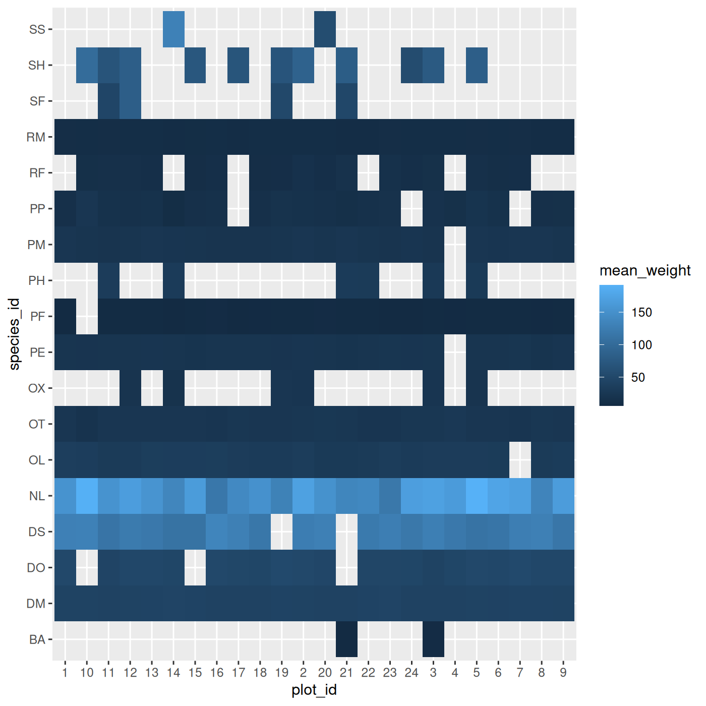
This is a nice summary of the whole analysis. Each row is a species and the color is its mean weight, so the horizontal bands of consistent color show that species identity determines body size, while the gaps show which species occur where.
Exporting our results
Our collaborator is waiting, so let’s write the wide table to a CSV file.
First, those bare numeric column names are not very informative in a
spreadsheet, and some programs behave oddly with column names that are
just numbers. Conveniently, pivot_wider() has a
names_prefix argument:
R
surveys_sp <- sp_by_plot %>%
pivot_wider(names_from = plot_id,
values_from = mean_weight,
names_prefix = "plot_")
surveys_sp
OUTPUT
# A tibble: 18 × 25
# Groups: species_id [18]
species_id plot_3 plot_21 plot_1 plot_2 plot_4 plot_5 plot_6 plot_7 plot_8
<chr> <dbl> <dbl> <dbl> <dbl> <dbl> <dbl> <dbl> <dbl> <dbl>
1 BA 8 6.5 NA NA NA NA NA NA NA
2 DM 41.2 41.5 42.7 42.6 41.9 42.6 42.1 43.2 43.4
3 DO 42.7 NA 50.1 50.3 46.8 50.4 49.0 52 49.2
4 DS 128. NA 129. 125. 118. 111. 114. 126. 128.
5 NL 171. 136. 154. 171. 164. 192. 176. 170. 134.
6 OL 32.1 28.6 35.5 34 33.0 32.6 31.8 NA 30.3
7 OT 24.1 24.1 23.7 24.9 26.5 23.6 23.5 22 24.1
8 OX 22 NA NA 22 NA 20 NA NA NA
9 PE 22.7 19.6 21.6 22.0 NA 21 21.6 22.8 19.4
10 PF 7.12 7.23 6.57 6.89 6.75 7.5 7.54 7 6.78
11 PH 28 31 NA NA NA 29 NA NA NA
12 PM 20.1 23.6 23.7 23.9 NA 23.7 22.3 23.4 23
13 PP 17.1 13.6 14.3 16.4 14.8 19.8 16.8 NA 13.9
14 RF 14.8 17 NA 16 NA 14 12.1 13 NA
15 RM 10.3 9.89 10.9 10.6 10.4 10.8 10.6 10.7 9
16 SF NA 49 NA NA NA NA NA NA NA
17 SH 76.0 79.9 NA 88 NA 82.7 NA NA NA
18 SS NA NA NA NA NA NA NA NA NA
# ℹ 15 more variables: plot_9 <dbl>, plot_10 <dbl>, plot_11 <dbl>,
# plot_12 <dbl>, plot_13 <dbl>, plot_14 <dbl>, plot_15 <dbl>, plot_16 <dbl>,
# plot_17 <dbl>, plot_18 <dbl>, plot_19 <dbl>, plot_20 <dbl>, plot_22 <dbl>,
# plot_23 <dbl>, plot_24 <dbl>Now we can save it with write_csv() from the
readr package (already loaded with tidyverse).
The first argument is the data.frame, the second is the path to the file
we want to create, including the .csv extension:
R
write_csv(surveys_sp, "data/cleaned/surveys_meanweight_species_plot.csv")
If we look in our data/cleaned folder, the new file is there, ready to send.
Where should output go?
We wrote this file into data/cleaned alongside our input data, which is fine for a small project. In a larger one, you might prefer a separate results/ or output/ folder, so it stays obvious which files you received and which files you produced.
Whatever you choose, the important thing is that you never overwrite
your raw data. Our original surveys_complete_77_89.csv is
exactly as it was when we started, and every change we made to it exists
as code in our script.
Putting it all together
We have covered a lot of functions, and it can be hard to see how they fit together when you meet them one at a time. So let’s step back and look at the whole analysis as a single piece of code.
Here is everything we did to answer our research question, from reading the file to writing the result:
R
library(tidyverse)
# Read the raw data
surveys <- read_csv("data/cleaned/surveys_complete_77_89.csv")
OUTPUT
Rows: 16878 Columns: 13
── Column specification ────────────────────────────────────────────────────────
Delimiter: ","
chr (6): species_id, sex, genus, species, taxa, plot_type
dbl (7): record_id, month, day, year, plot_id, hindfoot_length, weight
ℹ Use `spec()` to retrieve the full column specification for this data.
ℹ Specify the column types or set `show_col_types = FALSE` to quiet this message.R
# 1. Narrow to the rows and columns we need
surveys_weight <- surveys %>%
filter(!is.na(weight)) %>%
select(species_id, sex, plot_id, year, month, day, weight, hindfoot_length)
# 2. Test the hypothesis: is weight structured by species?
species_weights <- surveys_weight %>%
group_by(species_id) %>%
summarize(mean_weight = mean(weight),
n = n()) %>%
arrange(desc(mean_weight)) %>%
ungroup()
# 3. Remove the species effect to see what variation is left
surveys_centered <- surveys_weight %>%
group_by(species_id) %>%
mutate(mean_weight = mean(weight),
weight_diff = weight - mean_weight) %>%
ungroup()
# 4. Add a date column and look at change over time
surveys_dates <- surveys_weight %>%
mutate(date = ymd(paste(year, month, day, sep = "-"))) %>%
relocate(date, .after = day)
# 5. Build a shareable summary table and export it
surveys_sp <- surveys_weight %>%
summarize(mean_weight = mean(weight),
.by = c(species_id, plot_id)) %>% # This replaces group_by(species_id, plot_id)
ungroup() %>%
pivot_wider(names_from = plot_id,
values_from = mean_weight,
names_prefix = "plot_")
write_csv(surveys_sp, "data/cleaned/surveys_meanweight_species_plot.csv")
That’s the whole analysis. Around twenty lines of code, readable from top to bottom, and it would run identically on a colleague’s computer or on your own in two years’ time.
Notice the shape of it, because this shape recurs in almost every analysis you will ever do:
- Read your data, and leave the original file untouched.
- Subset down to the rows and columns your question needs.
- Create any variables your question requires but your data doesn’t have. This could also involve cleaning the data.
- Group and summarize to compare parts of your data against each other.
- Reshape the result into whatever form your audience or your next tool expects.
- Export it.
The functions will change depending on what you’re doing, and there are hundreds more in the tidyverse that we haven’t touched. But this sequence stays the same, and recognizing which step you are on is often the fastest way to work out which function you need.
What did we find out?
We began with a puzzle: the distribution of rodent weights had two humps, and the heaviest 10% of animals weighed thirty times more than the lightest 10%.
Using split-apply-combine, we found that the dataset contains species with mean weights ranging from under 10 grams to over 150 grams, and that the abundant species cluster at the two ends of that range rather than spreading evenly across it. Two species in particular, DM with over 5000 captures averaging around 42 grams, and DS and NL with thousands of captures averaging well over 100 grams, dominate the two humps.
When we subtracted each species’ own mean weight from every individual, the bimodality disappeared entirely, leaving a single distribution centered on zero. That’s about as clear a confirmation as you could ask for: there is nothing unusual about rodent body weights in this dataset. We were looking at several different animals at once and treating them as one.
This is worth sitting with for a moment, because it is a genuinely
common experience in data analysis. The strange pattern was not a
biological phenomenon, a measurement error, or an outlier problem. It
was an artefact of aggregating over a variable that mattered.
Whole-dataset summaries like summary() and
quantile() are excellent for spotting that something is
going on, but they cannot tell you what, because by design they collapse
exactly the structure you need to see. The moment you can split your
data into meaningful groups, questions that looked mysterious often
become straightforward.
Challenge 6: Your own analysis
You now have the tools to carry out a small analysis from start to finish. Pick one of the questions below, or create your own, and build a pipeline to answer it. Then write one or two sentences stating what you found.
- Last episode we plotted mean
hindfoot_lengthbysexand saw a difference. Is that difference still there once you account for species? (Hint: this is the same problem we just solved for weight.) - Which plots have the greatest number of distinct species? Does that
change over the years? (
n_distinct()will be useful.) - Is there a relationship between
weightandhindfoot_length? Does the relationship differ between species? - Are animals of unrecorded sex systematically different from the rest? Which species are they concentrated in, and does that explain anything?
There is no single right answer here, but as an illustration of the first question:
R
surveys %>%
filter(!is.na(hindfoot_length) & !is.na(sex)) %>%
filter(species_id %in% c("DM", "DO", "PP", "RM")) %>%
group_by(species_id, sex) %>%
summarize(mean_hindfoot = mean(hindfoot_length),
n = n()) %>%
ungroup() %>%
ggplot(aes(x = sex, y = mean_hindfoot, fill = sex)) +
geom_col() +
facet_wrap(vars(species_id))
OUTPUT
`summarise()` has regrouped the output.
ℹ Summaries were computed grouped by species_id and sex.
ℹ Output is grouped by species_id.
ℹ Use `summarise(.groups = "drop_last")` to silence this message.
ℹ Use `summarise(.by = c(species_id, sex))` for per-operation grouping
(`?dplyr::dplyr_by`) instead.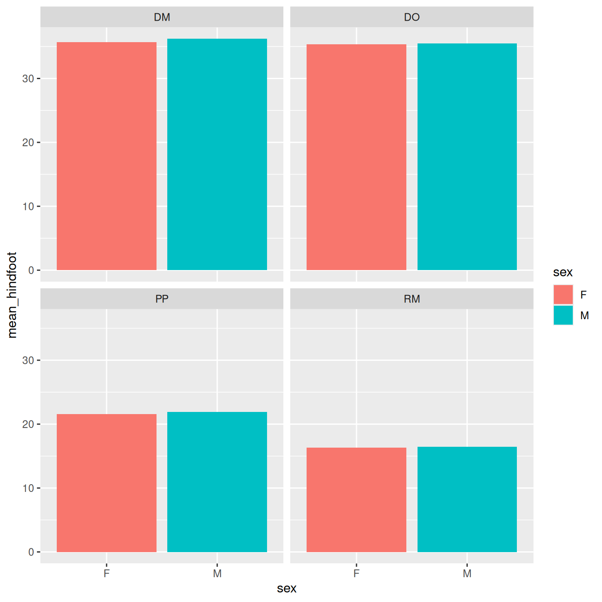
The differences between the sexes within each species are small, certainly much smaller than the differences between species. Just as with weight, the apparent effect of sex in the whole-dataset plot was largely driven by differences in which species each sex was sampled from, rather than by a large biological difference between males and females.
Where to go next
A few things that follow naturally from here, if you want to keep learning:
- Joining data. We worked with one table, but real projects usually
have several. dplyr’s
left_join()and friends combine tables by matching on shared columns, which is how you would attach the species names from a separate species table to our species_id column. - More
dplyrverbs.slice_max(),across(),case_when(), androwwise()all solve common problems more neatly than what we’ve shown. - Data cleaning. The file we used was already cleaned for you. The
janitorpackage andstringr(for text) are invaluable when yours isn’t. - R for Data Science (available free at <r4ds.hadley.nz>) covers everything in this workshop in much greater depth, and is the standard next step.
- use
filter()to subset rows andselect()to subset columns - build up pipelines one step at a time before assigning the result
- it is often best to keep components of dates separate until needed,
then use
mutate()to make a date column -
group_by()can be used withsummarize()to collapse rows ormutate()to keep the same number of rows -
pivot_wider()andpivot_longer()are powerful for reshaping data, but you should plan out how to use them thoughtfully